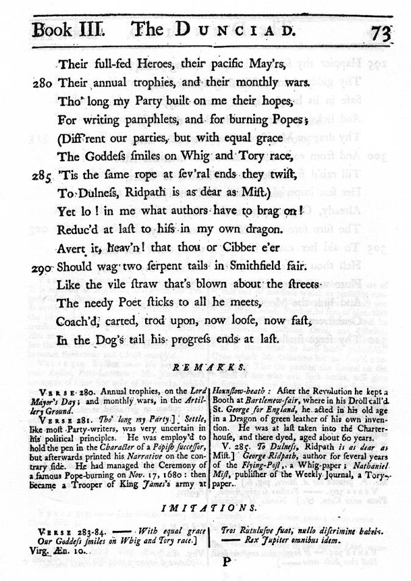

|
Text Encoding Initiative |
The XML Version of the TEI Guidelines14 Linking, Segmentation, and Alignment |
Up: Contents Previous: 13 Terminological Databases Next: 15 Simple Analytic Mechanisms
|
14 Linking, Segmentation, and Alignment 14.3 Blocks, Segments and Anchors 14.4 Correspondence and Alignment 14.6 Identical Elements and Virtual Copies 14.9 Connecting Analytic and Textual Markup Introductory Note (March 2002) 2 A Gentle Introduction to XML 3 Structure of the TEI Document Type Definition 4 Languages and Character Sets 6 Elements Available in All TEI Documents 14 Linking, Segmentation, and Alignment 17 Certainty and Responsibility 18 Transcription of Primary Sources 21 Graphs, Networks, and Trees 22 Tables, Formulae, and Graphics 29 Modifying and Customizing the TEI DTD 32 Algorithm for Recognizing Canonical References 38 Sample Tag Set Documentation 39 Formal Grammar for the TEI-Interchange-Format Subset of SGML |
This chapter discusses a number of ways in which encoders may represent analyses of the structure of a text which are not necessarily linear or hierarchic. In this chapter, tag sets and global attributes are provided for the following common requirements:
These facilities all use the same basic set of techniques, which depend on the ability to point to an element which has some form of identifier. The most convenient such identifier, and that which is recommended by these Guidelines wherever possible, is provided by the global id attribute, as defined in section 3.5 Global Attributes. An extension to this mechanism is provided, for elements which are located in different documents, or to which identifiers cannot be attached (perhaps because they are held on read-only media), known as the TEI extended pointer mechanism in section 14.2 Extended Pointers. For many of the topics discussed in this chapter, a choice of methods of encoding is offered, ranging from simple but less general ones, which use attribute values only, to more elaborate and more general ones, which use specialized elements. The following DTD fragments show the overall organization of the additional tag set discussed in the remainder of this chapter. The file teilink2.ent begins by declaring a set of additional attributes available globally when this tag set is enabled. This is followed by declarations for the attribute classes pointer and pointerGroup to which most of the elements discussed in this chapter belong; these attributes are all further described in the remainder of the chapter. <!-- 14.: Global attributes for the TEI.linking tag set-->
<!--
** Copyright 2004 TEI Consortium.
** See the main DTD fragment 'tei2.dtd' or the file 'COPYING' for the
** complete copyright notice.
-->
<!--When tag set TEI.linking is used, the following attributes
may be attached to any element:-->
<!ENTITY % a.linking '
corresp IDREFS #IMPLIED
synch IDREFS #IMPLIED
sameAs IDREF #IMPLIED
copyOf IDREF #IMPLIED
next IDREF #IMPLIED
prev IDREF #IMPLIED
exclude IDREFS #IMPLIED
select IDREFS #IMPLIED'>
<!--The following attributes apply to all pointer
elements:-->
<!ENTITY % a.pointer '
type CDATA #IMPLIED
resp CDATA #IMPLIED
crdate %ISO-date; #IMPLIED
targType CDATA #IMPLIED
targOrder (Y | N | U) "U"
evaluate ( all | one | none ) #IMPLIED'>
<!--The following attributes apply to all pointer group
elements:-->
<!ENTITY % a.pointerGroup '
%a.pointer;
domains IDREFS #IMPLIED
targFunc NMTOKENS #IMPLIED'>
<!-- end of 14.-->
The element declarations for this tag set are contained in the file teilink2.dtd: <!-- 14.: Linking, Segmentation and Alignment--> <!-- ** Copyright 2004 TEI Consortium. ** See the main DTD fragment 'tei2.dtd' or the file 'COPYING' for the ** complete copyright notice. --> [declarations from 14.1.3: Links inserted here ] [declarations from 14.2.1: Extended pointers inserted here ] [declarations from 14.3: Blocks, Segments and Anchors inserted here ] [declarations from 14.5.2: Temporal specification inserted here ] [declarations from 14.7: Aggregation inserted here ] [declarations from 14.8: Alternation inserted here ] <!-- end of 14.--> This tag set is made available by the mechanisms described in section 3.3 Invocation of the TEI DTD; this implies that the document type subset for a document using any of the tags or attributes described in this chapter must define a parameter entity TEI.linking with the value INCLUDE. For example, a document using this additional tag set and the prose base would begin with a series of declarations like the following: <!DOCTYPE TEI.2 PUBLIC "-//TEI P4//DTD Main Document Type//EN" "tei2.dtd" [
<!ENTITY % TEI.XML 'INCLUDE'>
<!ENTITY % TEI.prose 'INCLUDE'>
<!ENTITY % TEI.linking 'INCLUDE'>
]>
14.1 PointersWe say that one element points to others if the first has an attribute whose value is a reference to the others: such an element is called a pointer element, or simply a pointer. Among the pointers that have been introduced up to this point in these Guidelines are <note>, <ref> and <ptr>. These elements all indicate an association between one place in the document (the location of the pointer itself) and one or more others (the elements whose identifiers are specified by the pointer's target attribute). This element set defines a variation on this basic kind of pointer, known as a link which specifies both `ends' of an association. In addition, we define a syntax for representing locations in a document by a variety of means not dependent on the use of id attributes. 14.1.1 Pointers and LinksIn section 6.6 Simple Links and Cross References we introduced the simplest pointer elements, <ptr> and <ref>. Here we introduce additionally the <link> element, which represents an association between two (or more) locations by specifying each location explicitly. Its own location is irrelevant to the intended linkage.
As members of the class pointer, these elements share a common set of attributes: The targType and targOrder attributes may be used to constrain the scope of a link to certain element types. For example: <link type="echo" targets="p1 p2"/>This is a complete unconstrained link, of type echo. It assumes only that there is an element with identifier p1 and another with identifier p2 somewhere in the current document. <link type="echo" targType="p seg note" targets="p1 p2"/>This is a slightly more constrained link of the same type. p1 and p2 must now both identify a <p>, a <seg>, or a <note>, but there is no requirement as to which is which. (This may be useful if, as is often the case, different elements may participate in the same kind of link.) <link type="echo" targType="p note" targOrder="Y" targets="p1 p2"/>In this variation, not only must the link targets be either <p> or <note> elements, but the one with identifier p1 must be a <p>, and that with identifier p2 must be a <note>. Note that the present Guidelines provide no direct way of saying that p1 may identify either a <seg> or a <p> and p2 must identify a <note>. These attributes are most useful if applied to a group of links, when additional constraints may also be specified, as further discussed in section 14.1.3 Groups of Links below. Double connection among elements could also be expressed by a combination of pointer elements, for example, two <ptr> elements, or one <ptr> element and one <note> element. All that is required is that the value of the target (or other pointing) attribute of the one be the value of the id attribute of the other. What the <link> element accomplishes is the handling of double connection by means of a single element. Thus, in the following encoding: <ptr id="p1" target="p2"/> ... <ptr id="p2" target="p1"/>p1 points to p2, and p2 points to p1. This is logically equivalent to the more compact encoding: <link targets="p1 p2"/> As noted above, all elements pointed to or linked by these elements must be identifiable using the global id attribute. This implies that they must be present in the same document, and that they must bear unique id values. Pointing or linking to external documents and pointing or linking where identifiers are not available is implemented by the external pointing mechanisms discussed in section 14.2 Extended Pointers, where the <xptr> and <xref> elements are discussed. External links and links involving elements without identifiers do not require a special element; they may be represented using the standard <link> element, but an intermediate <xptr> element must be provided within the current document, to bear the id attribute used in the target of the link. 14.1.2 Using Pointers and Links
As an example of the use of these mechanisms which establish
connections among elements, consider the practice (common in 18th
century English verse and elsewhere) of providing footnotes citing
parallel passages from classical authors.
 <l>(Diff'rent our parties, but with equal grace</l>
<l>The Goddess smiles on Whig and Tory race,</l>
<l><note type="imitation" place="foot" anchored="no">
<bibl>Virg. Æn. 10.</bibl>
<quote>
<l>Tros Rutulusve fuat; nullo discrimine habebo.</l>
<l>—— Rex Jupiter omnibus idem.</l>
</quote>
</note>'Tis the same rope at sev'ral ends they twist,</l>
<l>To Dulness, Ridpath is as dear as Mist)</l>
This use of the <note> element can be called implicit pointing (or implicit linking). It relies on the juxtaposition of the note to the text being commented on for the connection to be understood. If it is felt that the mere juxtaposition of the note to the text does not make it sufficiently clear exactly what text segment is being commented on (for example, is it the immediately preceding line, or the immediately preceding two lines, or what?), or if it is decided to place the note at some distance from the text, then the pointing or the linking must be made explicit. We now consider various methods for doing that. Firstly, a <ptr> element might be placed at an appropriate point within the text to link it with the annotation: <l>(Diff'rent our parties, but with equal grace</l>
<l>The Goddess smiles on Whig and Tory race,
<ptr rend="unmarked" target="n3.284"/></l>
<l>'Tis the same rope at sev'ral ends they twist,</l>
<l>To Dulness, Ridpath is as dear as Mist)</l>
<!-- elsewhere in the document ... -->
<note id="n3.284" type="imitation" place="foot" anchored="no">
<bibl>Virg. Æn. 10.</bibl>
<quote>
<l>Tros Rutulusve fuat; nullo discrimine habebo.</l>
<l>—— Rex Jupiter omnibus idem.</l>
</quote>
</note>
The <note> element has been given an arbitrary identifier
(n3.284) to enable it to be specified as the
target of the pointer element. Because there is nothing in the text
to signal the existence of the annotation, the rend
attribute has been given the value unmarked.
Secondly, the target attribute of the <note> element can be used to point at its associated text, provided that an id attribute has been supplied for the associated text. Since, in this case, the note itself contains a pointer to the place in the text which it is annotating, this has also been encoded, using a <ref> element, which bears a target attribute of its own and contains a (slightly misquoted) extract from the text marked as a <quote> element: <l id="l3.283">(Diff'rent our parties, but with equal grace</l>
<l id="l3.284">The Goddess smiles on Whig and Tory race,</l>
<l id="l3.285">'Tis the same rope at sev'ral ends they twist,</l>
<l id="l3.286">To Dulness, Ridpath is as dear as Mist)</l>
<!-- elsewhere... -->
<note type="imitation" place="foot" anchored="no" target="l3.284">
<ref rend="sc" target="l3.284">Verse 283–84.
<quote>
<l>——. With equal grace</l>
<l>Our Goddess smiles on Whig and Tory race.</l>
</quote>
</ref>
<bibl>Virg. Æn. 10.</bibl>
<quote>
<l>Tros Rutulusve fuat; nullo discrimine habebo.</l>
<l>—— Rex Jupiter omnibus idem. </l>
</quote>
</note>
Combining these two approaches gives us the following associations:
Note that we do not have any way of pointing from the line itself to the note: the association is implied by containment of the pointer. We do not as yet have a true double link between text and note. Thirdly, therefore, we supply identifiers for both verse line and annotation, and use a <link> element to associate the two. Note that the <ptr> element and the target attribute on the <note> may now be dispensed with: <l id="l3.283">(Diff'rent our parties, but with equal grace</l>
<l id="l3.284">The Goddess smiles on Whig and Tory race,</l>
<l id="l3.285">'Tis the same rope at sev'ral ends they twist,</l>
<l id="l3.286">To Dulness, Ridpath is as dear as Mist)</l>
<!-- elsewhere in the document ... -->
<note id="n3.284" type="imitation" place="foot" anchored="no">
<ref rend="sc" target="l3.284">Verse 283–84.
<quote>
<l>——. With equal grace</l>
<l>Our Goddess smiles on Whig and Tory race.</l>
</quote></ref>
<bibl>Virg. Æn. 10.</bibl>
<quote>
<l>Tros Rutulusve fuat; nullo discrimine habebo.</l>
<l>—— Rex Jupiter omnibus idem. </l>
</quote>
</note>
<!-- ... and yet elsewhere in the document ... -->
<link targType="note l" targOrder="Y" targets="n3.284 l3.284"/>
The targets attribute of the <link> element here bears the identifiers of the note followed by that of the verse line. The targType and targOrder attributes may be used to enable application programs to check that the identifiers in fact pick out a <note> element and an <l> element and in that order. If targOrder has the value N, then the elements indicated by the targets attribute have to be either <note> or <l> elements, but are otherwise unconstrained. If neither attribute is present, then the only constraint is that the identifiers given must apply to some element within the current document. For completeness, we could also allocate an identifier to the reference within the note and encode the association between it and the verse line in the same way: <!-- ... --> <note id="n3.284" type="imitation" place="foot" anchored="no"> <ref id="r3.284" rend="sc"> <!-- ... --> </ref> </note> <!-- ... --> <link targType="ref l" targOrder="Y" targets="r3.284 l3.284"/>Indeed, the two <link>s could be combined into one, as follows: <link targType="note ref l" targOrder="Y" targets="n3.284 r3.284 l3.284"/> 14.1.3 Groups of LinksClearly, there are many reasons for which an encoder might wish to represent a link or association between different elements. For some of them, specific elements are provided in these Guidelines; some of these are discussed elsewhere in the present chapter. The <link> element is a general purpose element which may be used for any kind of association. The element <linkGrp> may be used to group links of a particular type together in a single part of the document; such a collection may be used to represent what is sometimes referred to in the literature of Hypertext as a web, a term introduced by the Brown University FRESS project in 1969.
The <linkGrp> element provides a convenient way of establishing a default for the type attribute on a group of links of the same type: by default, the type attribute on a <link> element has the same value as that given for type on the enclosing <linkGrp>. Typical software might hide a web entirely from the user, but use it as a source of information about links, which are displayed independently at their referenced locations. Alternatively, software might provide a direct view of the link collection, along with added functions for manipulating the collection, as by filtering, sorting, and so on. To continue our previous example, this text contains many other notes, of a kind similar to the one shown above. To avoid having to repeat the type="imitation" on each <note>, we may specify it once for all on a <linkGrp> element containing all links of this type. The targType and targOrder attributes can also be specified for a <linkGrp> element: <l id="l2.79">A place there is, betwixt earth, air and seas</l>
<l id="l2.80">Where from Ambrosia, Jove retires for ease.</l>
<!-- ... -->
<l id="l2.88">Sign'd with that Ichor which from Gods distills.</l>
<!-- ... -->
<l id="l3.283">(Diff'rent our parties, but with equal grace</l>
<l id="l3.284">The Goddess smiles on Whig and Tory race,</l>
<l id="l3.285">'Tis the same rope at sev'ral ends they twist,</l>
<l id="l3.286">To Dulness, Ridpath is as dear as Mist)</l>
<!-- ... -->
<!-- elsewhere in the document ... -->
<note id="n2.79" place="foot" anchored="no">
<bibl>Ovid Met. 12.</bibl>
<quote lang="la">
<l>Orbe locus media est, inter terrasq; fretumq;</l>
<l>Cœlestesq; plagas —</l>
</quote>
</note>
<note id="n2.88" place="foot" anchored="no">
Alludes to <bibl>Homer, Iliad 5</bibl> ...
</note>
<!-- ... -->
<note id="n3.284" place="foot" anchored="no">
<bibl>Virg. Æn. 10.</bibl>
<quote>
<l>Tros Rutulusve fuat; nullo discrimine habebo.</l>
<l>—— Rex Jupiter omnibus idem.</l>
</quote>
</note>
<!-- ... -->
<!-- yet elsewhere in the document ... -->
<linkGrp type="imitation" targType="note l" targOrder="Y">
<link targets="n2.79 l2.79"/>
<link targets="n2.88 l2.88"/>
<!-- ... -->
<link targets="n3.284 l3.284"/>
<!-- ... -->
</linkGrp>
Additional information for applications that use <linkGrp> elements can be provided by means of special attributes. First, the domains attribute can be used to identify the text elements within which the individual targets of the links are to be found. Suppose that the text under discussion is organized into a <body> element, containing the text of the poem, and a <back> element containing the notes. Then the domains attribute can have as its value the identifiers of the <body> and the <back>, to enable an application to verify that the link targets are in fact contained by appropriate elements, or to limit its search space: <body id="dunciad">
<!-- ... -->
<l id="l2.79">A place there is, betwixt earth, air and seas</l>
<l id="l2.80">Where from Ambrosia, Jove retires for ease.</l>
<!-- ... -->
<l id="l2.88">Sign'd with that Ichor which from Gods distills.</l>
<!-- ... -->
<l id="l3.283">(Diff'rent our parties, but with equal grace</l>
<l id="l3.284">The Goddess smiles on Whig and Tory race,</l>
<l id="l3.285">'Tis the same rope at sev'ral ends they twist,</l>
<l id="l3.286">To Dulness, Ridpath is as dear as Mist)</l>
<!-- ... -->
</body>
<back>
<div id="dunnotes" type="Notes">
<head>Notes to the Dunciad</head>
<!-- ... -->
<note id="n2.79" place="foot" anchored="no">
<bibl>Ovid Met. 12.</bibl>
<quote lang="la">
<l>Orbe locus media est, inter terrasq; fretumq;</l>
<l>Cœlestesq; plagas —</l>
</quote>
</note>
<note id="n2.88" place="foot" anchored="no">
Alludes to <bibl>Homer, Iliad 5</bibl> ...
</note>
<!-- ... -->
<note id="n3.284" place="foot" anchored="no">
<bibl>Virg. Æn. 10.</bibl>
<quote>
<l>Tros Rutulusve fuat; nullo discrimine habebo.</l>
<l>—— Rex Jupiter omnibus idem.</l>
</quote>
</note>
<!-- ... -->
</div>
</back>
<!-- elsewhere in the document ... -->
<linkGrp type="imitation" targType="note l" targOrder="Y" domains="dunciad dunnotes">
<link targets="n2.79 l2.79"/>
<link targets="n2.88 l2.88"/>
<!-- ... -->
<link targets="n3.284 l3.284"/>
<!-- ... -->
</linkGrp>
Note that there must be a single parent element for each `domain'; if some notes are contained by a section with identifier dunnotes, and others by a section with identifier dunimits, an intermediate pointer must be provided (as described in section 14.1.4 Intermediate Pointers) within the <linkGrp> and its identifier used instead. Next, the targFunc attribute can be used to provide further information about the role or function of the various targets specified for each link in the group. The value of the targFunc attribute is a list of names (formally, name tokens), one for each of the targets in the link; these names can be chosen freely by the encoder, but their significance should be documented in the encoding declaration in the header.111 In the current example, we might think of the note as containing the source of the imitation and the verse line as containing the goal of the imitation. Accordingly, we can specify the <linkGrp> in the preceding example thus: <linkGrp type="imitation" targType="note l" targOrder="Y"
domains="dunciad dunnotes" targFunc="source goal">
<link targets="n2.79 l2.79"/>
<link targets="n2.88 l2.88"/>
<!-- ... -->
<link targets="n3.284 l3.284"/>
<!-- ... -->
</linkGrp>
The <link> and <linkGrp> elements are formally defined as follows: <!-- 14.1.3: Links-->
<!ELEMENT link %om.RO; EMPTY >
<!ATTLIST link
%a.global;
%a.pointer;
targets IDREFS #REQUIRED
TEIform CDATA 'link' >
<!ELEMENT linkGrp %om.RR; (link | ptr | xptr)+ >
<!ATTLIST linkGrp
%a.global;
%a.pointerGroup;
TEIform CDATA 'linkGrp' >
<!-- end of 14.1.3-->
14.1.4 Intermediate PointersIn the preceding examples, we have shown various ways of linking an annotation and a single verse line. However, the example cited in fact requires us to encode an association between the note and a pair of verse lines (lines 284 and 285). There are a number of possible ways of correcting this error: one could use the target and targetEnd attributes of the <note> element to delimit the span to which the note applies (see further section 6.8 Notes, Annotation, and Indexing). Alternatively one could create an element to encode the couplet itself and assign it an id attribute, which can then be linked to the <note> and <ref> elements. This could be done either explicitly by means of an <lg> element, as defined in section 6.11.1 Core Tags for Verse, or a <seg> element, as defined in section 14.3 Blocks, Segments and Anchors, or implicitly, by means of the <join> element discussed in section 14.7 Aggregation. A third possibility however, is to use an `intermediate pointer' as follows: <l id="l3.283">(Diff'rent our parties, but with equal grace</l> <l id="l3.284">The Goddess smiles on Whig and Tory race,</l> <!-- ... --> <ptr id="l3.283284" targOrder="Y" target="l3.283 l3.284"/>When the target attribute of a <ptr> or <ref> element specifies more than one element, the indicated elements are intended to be combined or aggregated in some way to produce the object of the pointer. (Such aggregation is however the task of a processing application, and cannot be defined simply by the mark-up). In this example, the targOrder attribute should be specified to indicate that the order in which identifier values are supplied in the target attribute is significant. The id attribute provides an identifier which can then be linked to the <note> and <ref> elements: <link targType="note ref ptr" evaluate="all" targets="n3.284 r3.284 l3.283284"/> The evaluate="all" attribute value is used on the <link> element to specify that any pointer encountered as a target of that element is itself evaluated. If evaluate had the value none, the link target would be the pointer itself, rather than the objects it points to. Where a <linkGrp> element is used to group a collection of <link> elements, any intermediate pointer elements used by those <link> elements should be included within the <linkGrp>. Intermediate pointers of this kind are particularly important when extended pointers (discussed in the next section) are in use. 14.2 Extended PointersWhere the object of a link or pointer element is not contained within the current document, or where it does not bear an id attribute, it is not possible to point at it with a <ptr> or <ref> element, nor to link it directly with a <link> element, because no IDREF value can be supplied for the target or targets attribute of these elements. In such cases, the encoder must indicate the intended element indirectly by means of the elements discussed in this section. These elements identify their target using a special TEI-defined extended pointer notation, defined in section 14.2.2 Extended Pointer Syntax below. This notation was originally designed for compatibility with an ISO standard called HyTime,112 and also informed the design of the later W3C XPath and XPointer specifications. The W3C has since adopted as a Recommendation the XML Path Language, (http://www.w3.org/TR/xpath) which defines a language for addressing parts of an XML Document, and as a Candidate Recommendation the XPointer language which extends that language in a number of ways (see http://www.w3.org/TR/xptr). A later revision of these Guidelines will review and revise the recommendations of this chapter in light of the close overlap between the facilities provided by the TEI Extended Pointer Syntax and these two W3C proposals. The most widespread application of such external document linking is, of course, provided by the World Wide Web. The original version of these Guidelines did not provide specific guidance concerning the representation in TEI of the subset of linking facilities provided by HTML, since the Guidelines predate the widespread adoption of HTML. For the present edition, a brief note on recommended ways of providing this capability in TEI documents has been added below (14.2.4 Representation of HTML links in TEI). 14.2.1 Extended Pointer ElementsTo point or refer to locations in the current or some other document without requiring that the target bear an identifier, the following elements should be used:
Unlike the pointer elements discussed in the previous section, these elements do not specify their target by means of a target attribute. Instead these elements use one or both of the attributes from and to to delimit a portion of some document specified by the doc attribute. In all other respects, these elements correspond with the elements <ptr> and <ref> discussed in sections 6.6 Simple Links and Cross References, and 14.1 Pointers. Note that there is no element <xlink> corresponding with the <link> element; links can be made both within and between documents using the same syntax, as further discussed below. The values of the from and to attributes on the <xptr> and <xref> elements indicate the point or passage being referred to by showing how to locate it, using one or more special keywords, as defined below in section 14.2.2 Extended Pointer Syntax. Examples are given there. The <xptr> and <xref> elements are formally defined as follows: <!-- 14.2.1: Extended pointers-->
<!ELEMENT xref %om.RO; %paraContent;>
<!ATTLIST xref
%a.global;
%a.xPointer;
TEIform CDATA 'xref' >
<!ELEMENT xptr %om.RO; EMPTY>
<!ATTLIST xptr
%a.global;
%a.xPointer;
TEIform CDATA 'xptr' >
<!-- end of 14.2.1-->
14.2.2 Extended Pointer SyntaxAs noted above, the elements <xptr> and <xref> are used to represent a link between their own location (the `link origin') and some other location (the `destination'), which may or may not be in the same document. Software supporting intra- and inter-document links (e.g. hypertext systems) should provide access from the location of such an element to the destination. This section defines the allowable values for the attributes from, to, and doc of the <xptr> and <xref> elements. An <xptr> or <xref> element with no attributes at all is, by definition, a link to the root element of the document indicated (i.e. by default, the <TEI.2> element). The doc attribute value must be the name of an entity declared in the document type declaration. If only the doc attribute is given a value, then by definition the destination is the entire entity named by the doc value. A more specific location within another entity must be specified with the from and the to attributes, as described below. The from and the to attributes indicate the specific location pointed at, within the entity named by the doc attribute (or within the current document, if no doc value is given). Their values are referred to below as location pointer specifications. When both attributes are specified, the span pointed at by the element runs from the starting point of the span indicated by from to the ending point of the string specified by to. If the latter precedes the former in the document, then the pointer is in error and fails. If only the from attribute is specified, the to attribute defaults to the same value; the effect is that the element as a whole points to the span indicated by the from attribute. It is a semantic error to specify a value for to but not for from. 14.2.2.1 Location LaddersEach location pointer specification consists of a sequence of location terms, each of which consists of a keyword specifying a location type followed by one or more parenthesized parameter lists, each of which specifies a location value via a list of parameters. Location types and values, and the parameters within a location value, must be separated by white space characters. Using terms borrowed from HyTime, we say that each TEI location term in a specification provides the location source for the next, and the entire specification is equivalent to a location ladder. By specifying the entire ladder in a single attribute value, the TEI extended pointer mechanism greatly reduces the syntactic and processing complexity of hypertextual pointers. In formal terms:113 ladder ::= locterm
| ladder locterm
14.2.2.2 Location TermsThe keywords used in location terms are these; references to ‘the tree’ mean the tree representing the document hierarchy.114
locterm ::= 'ROOT' // default first location
| 'HERE' // location of the xptr
| 'ID' '(' NAME ')' // only one ID allowed.
| 'REF' '(' characters ')' // only one ref allowed
| 'CHILD' steps
| 'DESCENDANT' steps
| 'ANCESTOR' steps
| 'PREVIOUS' steps
| 'NEXT' steps
| 'PRECEDING' steps
| 'FOLLOWING' steps
| 'PATTERN' regs // mult patterns allowed
| 'TOKEN' '(' range ')'
| 'STR' '(' range ')'
| 'SPACE' '(' NAME ')' pointpair
| 'FOREIGN' parms
| 'HYQ' parms
| 'DITTO' // valid only in TO att.
Note that the keywords, though shown here quoted in uppercase, are not
case sensitive.
Each location term specifies a location in the target document; this location may be a single point, more often a span of text (often the span of a single element) within the target document. The location ladder as a whole is interpreted from left to right, and each location term specifies a location relative to the location specified by the sequence prior to that point (i.e. to its location source). Unless here or id is specified as the first location term, the beginning location source is always root. An empty location sequence thus is the same as root and specifies the entire destination entity. In general, the search for the location specified by a location term will be conducted only within its location source (i.e. within the location already identified by preceding location terms). There are however several exceptions. The terms root, here, and id all ignore the location source defined by any preceding terms and therefore make sense only as the first items in the ladder. The terms ancestor, next, and previous do not ignore the location source, but select a new span from the adjacent or enclosing portions of the text, and not from within the location source. Finally the location terms foreign, space, and HyQ are not defined fully here; they may or may not ignore the existing location source. Some of the location terms make sense only in hierarchical documents; these are id, child, ancestor, descendant, previous, next, preceding, and following. The latter six involve traversing the tree representing the document hierarchy and are most easily understood when their location source is a single element. If the location source is not a single element, the tree-traversal keywords operate upon its beginning end-point, its `front end' (in English, this will be the leftmost point of the location source; in Arabic or Hebrew it will be the rightmost point). In this case child and descendant have no meaning, since character data has no descendants in the document tree; the first ancestor of such a location source is the element immediately containing the character data in question, and the siblings referred to by next and previous are the other children of that immediately containing element. The details of each keyword are given below, along with definitions of their syntax and semantics of their results. Examples are also provided. It is strongly recommended that when IDs are available, they should be used in preference to the other methods for pointing defined here. For all keywords, the description assumes that the target document does in fact contain a span or element which matches the description; otherwise, the location term has no referent and is said to `fail'. If any location term fails, the entire pointer fails. No backtracking or retrying is performed (and indeed for the most part the location terms are defined as having only one matching location, so backtracking would in most cases lead to no better result). 14.2.2.3 The ROOT KeywordThe location term root selects the root element of the destination document tree; in SGML terms, this is the `document element'.115 Since it ignores any existing location source, the root keyword makes sense only as the first location term in the ladder. Since root is assumed as the implicit first term in any ladder, the following two location ladders have the same meaning: ROOT DESCENDANT (2 div1) DESCENDANT (2 div1) 14.2.2.4 The HERE KeywordThe keyword here designates the location at which the pointer element itself is situated; it allows extended pointers to select items like ‘the paragraph immediately preceding the one within which this pointer occurs’. Since it ignores any existing location source, this keyword typically makes sense only as the first location term in a location specification. To designate ‘the paragraph preceding the current one’, the following location ladder could be used: HERE ANCESTOR (1 p) PREVIOUS (1 p)(See below for descriptions of the keywords ancestor and previous.) 14.2.2.5 The ID KeywordThe resulting location is the element within the destination entity whose ID attribute has the value specified as the location value. The ID location type typically makes sense only as the first location pair in a location specification, but there is no syntactic requirement that it be so. For example, the location specification ID (a27)chooses the necessarily unique element of the destination entity which has an attribute of declared value of type ID, whose value is a27. 14.2.2.6 The REF KeywordThe resulting location is an element which can be found by interpreting the location value in accordance with document-specific rules for a canonical reference. Such reference systems, particularly common in documents of interest to classical and biblical scholars, must also be defined in the TEI header, using the <refsDecl> element (see section 5.3.5 The Reference System Declaration). If more than one element matches the canonical reference, the first one encountered is chosen. For example, the location specification ref (MT.2.1)chooses the first element of the destination entity which is identified by the canonical reference ‘MT.2.1’ 14.2.2.7 The CHILD KeywordThe child location type specifies an element or span of character data in the document hierarchy using a location value which functions as a domain-style address. The value is a series of parenthesized steps, separated by white space. Each such step represents one level of the hierarchy within the location source. Each step may contain one or more parameters separated by white space and interpreted in order as follows:
In formal terms, the location value of child is a series of steps: steps ::= '(' step ')'
| steps '(' step ')'
step ::= instance
| instance element
| instance element avspecs
avspecs ::= attribute value
| avspecs attribute value
Location values of the same form are also used by the keywords descendant, ancestor, previous, and next; details of the interpretation may vary from keyword to keyword. If an instance indicator alone is specified, as a number n, it selects the nth child of the location source. If the special value ALL is given, then all the children of the location source are selected. If the instance indicator is specified with following parameters, it selects all, or the nth, among those children of the location source which satisfy the other parameters. If a negative number is given, the nth child is counted from the last child of the location source to the first. The location source must contain at least n children;116 if it does not, the child term fails. In formal terms, the first parameter of a step is an instance indicator, which in turn is either the special value ALL or a signed integer:
instance ::= 'ALL'
| signed
signed ::= NUMBER // default sign is +
| '+' NUMBER
| '-' NUMBER
If a second parameter is given, it is interpreted as a generic identifier, and only elements of the type indicated will be selected. For example, the location specification CHILD (3 div1) (4 div2) (29 p)chooses the 29th paragraph of the fourth sub-division of the third major division of the initial location source. The location specification CHILD (3 div1) (4 div2) (-2 p)chooses the next-to-last paragraph of the fourth <div2> of the third <div1> in the location source. Constraint by generic identifier is strongly recommended, because it makes links more perspicuous and more robust. It is perspicuous because humans typically refer to things by type: as ‘the second section’, ‘the third paragraph’, etc. It is robust because it increases the chance of detecting breakage if (due to document editing) the target originally pointed at no longer exists. The generic identifier may be specified as a literal name, as a (parenthesized) regular expression, or using the reserved values #CDATA or *. Regular expressions take the form described below; the location term CHILD (3 (div[123]))matches the third element which has a generic identifier of div1, div2, or div3. If the generic identifier is specified as *, any generic identifier is matched; this means that ‘CHILD (2 *)’ is synonymous with CHILD (2). If the second parameter is #CDATA, the location term selects only untagged sub-portions of an element having mixed content (a mixture of sub-elements and text portions). The location ladder CHILD (3 #CDATA)thus chooses the third span of character data directly contained by the current location source. If the location source is a paragraph containing
where the three sentences A, B, and C are character data enclosed by no element smaller than the paragraph itself, then CHILD (3 #CDATA) selects sentence C, while CHILD (3) selects sentence B. If specified as a name (i.e. without parentheses), the generic identifier is case sensitive if and only if the SGML declaration specifies that generic identifiers are case sensitive (in XML they are always case sensitive; in SGML by default they are not). If specified as a regular expression, the expression given is always case sensitive. In formal terms the second parameter of a step is defined thus:
element ::= NAME
| '#CDATA'
| '*'
| '(' regular ')'
The third and fourth parameters, if given, are interpreted as an attribute-value pair, and only elements which match that pair in the way described below will be selected; the fourth and fifth parameters, and all following pairs of parameters, are interpreted in the same way. When more than one pair is given, all must be matched. The third, fifth, seventh, etc., parameters are interpreted, if specified, as attribute names. Like generic identifiers, attribute names may be specified as * in location ladders in the (unlikely) event that an attribute value constitutes a constraint regardless of what attribute name it is a value for. The attribute name parameter may also be specified as a parenthesized regular expression. For example, the location term CHILD (1 * target *)selects the first child of the location source for which the attribute target has a value. The location term CHILD (1 * (target(s?)) *)will select the first child of the location source for which an attribute called either target or targets has a value. As with generic identifiers, attribute names are case sensitive if and only if the SGML declaration says they are (in XML they are always case sensitive; in SGML by default they are not); regular expressions are always case sensitive, as shown here. In formal terms, the attribute-name parameter of a tree-traversal step is defined thus:
attribute ::= NAME
| '*'
| '(' regular ')'
If a fourth, sixth, eighth, etc., parameter is specified, it is interpreted as an attribute value, and only elements satisfying the other constraints and also bearing an attribute of the specified name and value will be selected. The attribute value may be specified exactly as in an SGML document: if the attribute value to be specified contains non-name characters, it must be enclosed in quotation marks. The attribute value may also be specified as a regular expression, enclosed in parentheses, or using the two special values #IMPLIED and *. For example, the location specification CHILD (1 * n 2) (1 * n 1)chooses an element using the global n attribute. Beginning at the location source, the first child (whatever kind of element it is) with an n attribute having the value 2 is chosen; then that element's first direct sub-element having the value 1 for the same attribute is chosen. CHILD (1 fs resp ((lanc|LANC)(s|S|ashire|ASHIRE)))selects the first child of the location source which is an <fs> element bearing a resp attribute with the value lancs, lancashire, LANCS, or LANCASHIRE (as well as other possible combinations which are left to the reader's ingenuity). If specified with quotation marks or as a regular expression, the attribute-value parameter is case-sensitive; otherwise not. CHILD (1 fs resp #IMPLIED)selects the first child of the location source which is an <fs> element for which the resp attribute has been left unspecified. The location ladder ROOT DESCENDANT (1 (div[01234567]) type chapter n 2)selects the second chapter of a text, regardless of whether chapters are tagged using <div>, <div1>, <div2>, or some other text-division element. It does so by selecting the first text-division element in the document which is of type chapter and has the n value 2. In formal terms, the attribute-value parameter of a tree-traversal step is defined thus: value ::= LITERAL // i.e. quoted string.
| NAME // As for attribute values in
| NUMBER // document, NMTOKENs need not
| NUMTOKEN // be quoted
| '#IMPLIED' // No value specified, no default
| '*' // Any value matches.
| '(' regular ')'
14.2.2.8 The DESCENDANT KeywordIf the descendant keyword is used, the location term selects an element or character-data string which is a descendant of the current location source. Like child, descendant takes as a value a series of one or more parenthesized steps, which may contain the same four parameters described above. The set of elements and strings which may be selected, however, is the set of all descendants of the location source (i.e. the set of all elements contained by it), rather than only the set of immediate children. ID (a23) DESCENDANT (2 term lang de)thus selects the second <term> element with a lang of de occurring within the element with an id of a23. The search for matching elements occurs in document order; in terms of the document tree, this amounts to a depth-first left-to-right search. If the instance number is negative, the search is a depth-first right-to-left search, in which the right-most, deepest matching element is numbered -1, etc. The location specification DESCENDANT (-1 note)thus chooses the last <note> element in the document, that is, the one with the rightmost start-tag. 14.2.2.9 The ANCESTOR KeywordThe ancestor location term selects an element from among the direct ancestors of the location source in the document hierarchy. The location value is of the same form as defined for the child and descendant location types. However, the ancestor keyword selects elements from the list of containing elements or `ancestors' of the location source, counting upwards from the parent of the location source (which is ancestor number 1) to the root of the document instance (which is ancestor number -1). The location source must have at least as many ancestors as the absolute value of the instance number specified as the first parameter of the step. The ancestor type thus may not be specified as the first component of a location specification, because the initial location source in effect at that point is the root, which has no ancestors. For example, the location term ANCESTOR (1 * n 1) (1 div)first chooses the smallest element properly containing the location source and having attribute n with value 1; and then the smallest <div> element properly containing it. The location term ANCESTOR (1)chooses the immediate parent of the location source, regardless of its type or attributes. The location term ANCESTOR (1 * lang fr)selects the smallest ancestor for which the lang attribute has the value fr. The term ANCESTOR (-1 * lang fr)selects the largest ancestor for which the lang attribute has the value fr. Without the attribute specification, the term ANCESTOR (-1)selects the largest ancestor of the location source and is thus normally synonymous with the keyword ROOT. If the instance indicator is given as ALL, then all the ancestor elements which match the later parameters are selected; since the largest of these will necessarily include all the others, the value ALL is thus synonymous with the value (-1) when used with ANCESTOR. Finally, the term ANCESTOR (1 (div[0123456789]?))chooses the smallest <div> element of any level which contains the location source. 14.2.2.10 The PREVIOUS KeywordThe previous keyword selects an element or character-data string from among those which precede the location source within the same containing element. We speak of the elements and character-data strings contained by the same parent element as siblings; those which precede a given element or string in the document are its elder siblings; those which follow it are its younger siblings. The instance number in the location value of a previous term designates the nth elder sibling of the location source, counting from most recent to less recent. The location ladder id (a23) PREVIOUS (1)thus designates the element immediately preceding the element with an id of a23. Negative instance numbers also designate elder siblings, counting from the eldest sibling to the youngest. The location source must have at least as many elder siblings as the absolute value of the instance number. If the location source has at least one elder sibling, then the location term PREVIOUS (-1)designates its eldest sibling and is thus synonymous with the ladder ANCESTOR (1) CHILD (1)The value ALL may be used to select the entire range of elder siblings of an element: the location ladder ID (a23) PREVIOUS (ALL)thus designates the set of elements which precede the element with an id of a23 and are contained by the same parent. 14.2.2.11 The NEXT KeywordThe keyword next behaves like previous, but selects from the younger siblings of the location source, not the elder siblings. The location ladder ID (a23) NEXT (1)thus designates the element or string immediately following the element which has an id of a23. Negative instance numbers also designate younger siblings, counting from the youngest sibling to the location source. The location source must have at least as many younger siblings as the absolute value of the instance number. If the location source has at least one younger sibling, then the location term NEXT (-1)designates its youngest sibling and is thus synonymous with the ladder ANCESTOR (1) CHILD (-1) 14.2.2.12 The PRECEDING KeywordThe preceding keyword selects an element or character-data string from among those which precede the location source, without being limited to the same containing element. The set of elements and strings which may be selected is the set of all elements and strings in the entire document which occur or begin before the location source. (For purposes of the keywords PRECEDING and FOLLOWING, elements are interpreted as occurring where their start-tag occurs.) The PRECEDING keyword thus resembles PREVIOUS but differs in searching a larger set of strings and elements; its result is not guaranteed to be a subset of its location source. The instance number in the location value of a preceding term designates the nth element or character-data string preceding the location source, counting from most recent to less recent. The location ladder ID (a23) PRECEDING (5)thus designates the fifth element or string before the element with an id of a23. Negative instance numbers also designate preceding elements or strings, counting from the eldest to the youngest; the ladder ID (a23) PRECEDING (-5)thus selects the fifth element or string in the document overall, assuming that it precedes the element with an id of a23. It is thus normally synonymous with ROOT DESCENDANT (5)differing only in that it fails if four items or fewer precede element A23. The location source must have at least as many elder siblings as the absolute value of the instance number; otherwise, the preceding term fails. The value ALL may be used to select the entire portion of the document preceding the beginning of the location source: the location ladder ID (a23) PRECEDING (ALL)designates the entire portion of the document preceding the start-tag for element A23. 14.2.2.13 The FOLLOWING KeywordThe keyword following behaves like preceding, but selects from the portion of the document following the location source, not that preceding it. The location ladder ID (a23) FOLLOWING (1)thus designates the element or string immediately following the element which has an id of a23. Negative instance numbers select elements or strings counting from the end of the document to the location source. There must be at least as many elements or strings following the location source as the absolute value of the instance number. If the location source has at least one following element or string, then the location term FOLLOWING (-1)designates the youngest of these and is thus synonymous with the ladder ROOT DESCENDANT (-1) 14.2.2.14 The PATTERN KeywordThe pattern keyword selects the first place within the location source which matches a pattern-matching expression included as the location value. If more than one location matches that expression, there is no error, but the second and later matches are ignored. Matching is defined to be case-sensitive, i.e. ‘abc’ is not the same as ‘ABC’. The pattern is expressed as a regular expression in which the following characters have special meanings, similar to those of many Unix programs (such as grep) which handle regular expressions:
For example, the location specification PATTERN (Chapter.8)chooses the first instance of the content string ‘Chapter’ which is followed by any single character and then the digit 8, within the location source. Various elements which contain that location could be selected by following the pattern location term with one or more of other types such as ancestor (see above). It is recommended practice to use structure-oriented location types to specify the destination element as narrowly as possible, and then to specify a pattern only within that element context. If element boundaries are encountered within the location source, however, they are ignored and have no effect on the pattern matching operation. In formal terms, the location value of the pattern keyword is defined thus: regs ::= '(' regular ')'
| regs '(' regular ')'
regular ::= character
| '.' // match any character
| '^' & characters & '] // match any char not in list
| '[' & characters & '] // match any char in list
| '\a' // match any alphabetic
| '\d' // match any digit 0-9
| '\n' // match newline (&#RE;&#RS;)
| '\s' // match any whitespace character
| '\\' // match backslash (rev. solidus)
| '\' & nonspecial // match nonspecial character
| regular & '*' // match 0-n of 'regular'
| regular & '+' // match 1-n of 'regular'
| regular & '?' // match 0-1 of 'regular'
| '^' & regular // match at start of loc source
| regular & '$' // match at end of loc source
| regular & regular // match 1st, then 2d regular exp.
| regular & '|' & regular // match either 1st or 2d
| '(' & regular & ')' // use parentheses for grouping
characters ::= /* empty string */
| characters character
nonspecial ::= /* any character except a, d, n, or s */
14.2.2.15 The TOKEN KeywordThe token keyword selects a sequence of one or more tokens chosen from within the character content of the location source, where tokens are counted exactly as for the corresponding HyTime tokenloc form. The location value must be either a single positive integer, or a pair of positive integers separated by white space, representing the first and the last token numbers to be included in the resulting location. If two integers are specified, the second must not be less than the first. The location source must contain at least as many tokens as are specified in the location value. This location type should not be used to count across element boundaries. It is recommended practice to use structure-oriented location types to specify the destination element as narrowly as possible, and then to specify a token location only within that element context. If element boundaries are encountered within the location source, they are ignored. This location type, like the corresponding HyTime construct, behaves intuitively only for strings containing an alternating sequence of SGML name-characters and white space; this is the type of string found, for example, in attribute values of type IDREFS, such as a21 z a13. The related XPath and XPointer specification do not provide such a construct, and those interested in maximizing compatibility may wish to avoid it. For compatibility with the HyTime standard, all characters not included in the class of name characters by the current SGML declaration (by default this includes all punctuation other than the hyphen and full stop) are treated as white space characters. For example, the location specification ID (a27) TOKEN (3 5)chooses the 3rd, 4th, and 5th tokens from the content of the element whose identifier is a27. If this element contained the string ‘This is _not_ a very good idea’, the target selected would be ‘not_ a very’. In formal terms the location value of the token and str keywords is defined as a range: range ::= NUMBER
| NUMBER NUMBER
14.2.2.16 The STR KeywordThe str keyword identifies a sequence of one or more characters chosen from within the character content of the location source, where characters are counted exactly as for the HyTime dataloc form with quantum=str, which has a corresponding meaning and usage. The location value must be either a single positive integer, or a pair of positive integers separated by white space, indicating the first and the last characters to be included in the resulting location. If two integers are specified, the second must not be less than the first. The location source must have at least as many characters as are specified in the larger of the integers. This location type should not be used to count across element boundaries. The recommended practice is to use structure-oriented location types to specify the destination element, and then to specify a character location only within that element context. If element boundaries are encountered, however, within the location source, they have no effect. Character offsets in a document must be counted not from the original source file, but from the output of the SGML parser, (the element structure information set or ESIS, or the XML Document Object Model). This is because a parser may delete or expand certain characters transparently. For example, the location specification ID (a27) STRLOC (3 5)chooses the 3rd 4th and 5th characters of the content of the element having identifier a27. If this element contained the string ‘This turned out to be an even worse idea’, the result would be the string ‘is ’ (i, s and a space). In multi-byte character sets it is characters which are counted, not bytes. However, in the case of diacritics coded by sequences of bit combinations rather than having separate code points for every combination of letter and diacritic, the diacritics are counted. This means that the following location ladder may retrieve different strings, depending on the system character set in use and on the entity declarations in effect: PATTERN (Wagner's\sGötterd&aum;mmerung) STR (10 24)In some character sets, where � and � are encoded as single characters, it will select the string ‘G�tterd�mmerung’; in others, where they are encoded with distinct characters for umlaut, a, and o, it will select the string ‘G�tterd�mmeru’, truncating the last two letters. If a system-dependent definition is used (containing e.g. a printer escape sequence), the results are even less predictable. For this reason, the str keyword must be used with caution and should be avoided where possible. 14.2.2.17 The SPACE KeywordThe space location term applies to entities which represent graphical or spatio-temporal data; typically such entities are not encoded in SGML or XML, but in one of many specialized graphical formats. The NOTATION declaration and related constructs provide for specifying what format such an entity uses. The location value for space consists of two or three parenthesized parameter lists. The first contains the name of the co-ordinate space in use. The second and third each consist of any number of signed integers. The numbers in a parameter list represent locations along each dimension of a Cartesian co-ordinate space with all axes orthogonal; the length of the list equals the number of dimensions/axes of the space (usually, but not inevitably, 2, 3, or 4). If the third parameter list is not specified, the location is the single point in the co-ordinate space specified by the second parameter list. If all three parameter lists are specified, the location is the rectangular prism defined by treating corresponding items of the second and third lists as inclusive bounds along each dimension in turn. The mapping from co-ordinates to physical or display space, and the meaning and ordering of the axes, are not defined by these guidelines. They should be specified in the TEI header unless they can be determined by definition from the format in which the referenced entity is known to be encoded (for example, many graphics formats can only encode locations in units of pixels, counted in a 3 dimensional left-handed co-ordinate space). Time may be construed as an axis in addition to any others; when it is, it is TEI recommended practice that it be positioned last. The units used must be defined in the TEI header; it is acceptable in certain media (such as videodiscs) to use frame numbers as a surrogate axis for time. SPACE (D2) (0 0) (1 1)specifies the location of the unit square tangent to the origin in quadrant 1 of a common graph. The location value for a space location term is a NAME enclosed in parentheses, followed by a point pair: pointpair ::= '(' numbers ')'
| '(' numbers ')' '(' numbers ')'
numbers ::= signed
| numbers signed
14.2.2.18 The FOREIGN KeywordThe foreign keyword takes any number of parenthesized parameter lists, and is terminated by the end of the attribute value, or by the next non-parenthesized token, whichever comes first. The meaning of the foreign location term is not defined by these Guidelines. It is intended for use in pointing to special kinds of non-hierarchical, non-coordinate space data. That is, it should be used for making links to data which cannot be specified using the other mechanisms. The meaning of any foreign location types must be specified in the TEI header, as a series of paragraphs at the end of the <encodingDesc> element defined in section 5.3 The Encoding Description. If more than one such type is used, it is TEI recommended practice that the first parameter list to foreign be a name associated with the particular type by documentation in the TEI header. For example, assume that some program uses a proprietary data format called XFORM, and that the program has supplied an identifier 06286208998 for some piece of data it owns. Then the location specification FOREIGN (XFORM) (06286208998)would be one way of expressing a link to that piece of data. 14.2.2.19 The HYQ KeywordThe HyQ keyword takes a single parenthesized parameter list, which contains an expression in the HyQ query language defined by the HyTime standard. See documentation on HyTime and HyQ for definitions of HyQ expressions. 14.2.2.20 The DITTO KeywordThe ditto keyword is valid only as the first location term in a ladder, and only within the to attribute of an extended pointer element. It designates the location result of the from attribute on the same element. Thus in the pointer <xptr from="ID (a23) ANCESTOR (1 div[0123]) PATTERN (Wagnerian)"
to="DITTO PATTERN (Liebestod)"/>
the from attribute designates the first occurrence of the
string ‘Wagnerian’ in the <div> containing the
element with an id of a23. The
to attribute designates the first occurrence of the string
‘Liebestod’ which occurs after
‘Wagnerian’, within the same <div>. Without the
ditto keyword, it would be necessary to repeat
the entire location ladder of the from attribute in the
to attribute, which would be error-prone for complex
expressions.
14.2.3 Using Extended PointersAs noted above, when only the from attribute is specified, the <xref> or <xptr> element points at the span indicated by from. When both from and to are specified, the element points at the span running from the beginning of the span indicated by the former to the end of the span indicated by the latter. To point at the second, third, and fourth paragraphs of the second chapter (<div1>) in the body of the current document, therefore, one may specify either of the following: <xptr from="DESCENDANT (1 body) CHILD (2 div1) (2 p)"
to="DESCENDANT (1 body) CHILD (2 div1) (4 p)" />
<!-- or equivalently: -->
<xptr from="DESCENDANT (1 body) CHILD (2 div1) (2 p)"
to="DITTO NEXT (2 p)" />
To point to ‘the <term> occurring in the current <termEntry> with attribute n = 2’, only the from attribute would be required: <xptr from="HERE ANCESTOR (1 termEntry) DESCENDANT (1 term N 2)"/> The following example demonstrates how elements from two different documents may be combined <xptr id="x1" doc="doc1" from="ID (d1.1)"/> <xptr id="x2" doc="doc2" from="ID (d2.1) tree (2 *)"/> <ptr id="p1" target="x1 x2"/> <link evaluate="all" targets="p1 s1 s2"/>The first <xptr> indicates the element in doc1 which has identifier d1.1. The second indicates the second subelement of the element in doc2 which has identifier d2.1. These two elements are pointed to as a single item by the <ptr> element and given the identifier p1. This aggregation, finally, is linked with two other elements both in the current document, with identifiers s1 and s2. An extended pointer, as described above, may specify as its target only a single destination. Where the intended destination of a link is an aggregation or alignment of destinations, possibly in separate documents, an intermediate pointer of some kind must be used, as described in section 14.1.4 Intermediate Pointers elsewhere in this chapter. Like any other element, an <xref> and <xptr> may be given a unique id within the document that contains them. This id value can then be supplied as one of the target values for an intermediate <ptr> or <link> element, to represent aggregation or linkage respectively. The <join> element discussed in section 14.7 Aggregation may also be used. For example, a modern commentary on an older text must frequently refer to that text, which might well be encoded in a separate document. Some discussions will refer to set of discrete passages in the older text, and will thus require multi-headed pointers. In such a case, the document type declaration must contain a declaration for an entity containing the older text, which might look something like this: <!-- the 1729 Dunciad Variorum --> <!ENTITY dunciad SYSTEM 'dunc1729.tei' NDATA TEI-XML >In the commentary itself, reference will be made to this external document, using <xptr> and <xref> elements. When the commentary refers to aggregates of discontiguous passages, <xptr> elements are used to point to the individual passage, and a <ref> element may refer to these passages as a group by pointing to the <xptr>s: <xptr id="xl2.5" doc="dunciad" from="ID (L2.5)"/> <xptr id="xn1.48" doc="dunciad" from="ID (N1.48)"/> <xptr id="xn1.68" doc="dunciad" from="ID (N1.68)"/> <xptr id="xn1.104" doc="dunciad" from="ID (N1.104)"/> <xptr id="xn1.106" doc="dunciad" from="ID (N1.106)"/> ... <p>In <ref evaluate="all" target="xl2.5 xn1.48 xn1.68 xn1.104 xn1.106">the references to Theobald</ref>, Pope's satire characteristically ...</p>If the same discontiguous target is to be referred to repeatedly, it may be convenient to give it a single identifier, thus: <xptr id="xl2.5" doc="dunciad" from="ID (L2.5)"/> <xptr id="xn1.48" doc="dunciad" from="ID (N1.48)"/> <xptr id="xn1.68" doc="dunciad" from="ID (N1.68)"/> <xptr id="xn1.104" doc="dunciad" from="ID (N1.104)"/> <xptr id="xn1.106" doc="dunciad" from="ID (N1.106)"/> <ptr id="theobald" target="xl2.5 xn1.48 xn1.68 xn1.104 xn1.106"/> ... <p>In <ref evaluate="all" target="theobald">the references to Theobald</ref>, Pope's satire characteristically ...</p> A hypertext web might associate passages of the text and notes with the individuals mentioned, the ancient authors imitated, or thematic content, thus: <xptr id='xl2.5' doc='dunciad' from='ID (L2.5)' />
<xptr id='xn1.48' doc='dunciad' from='ID (N1.48)' />
<xptr id='xn1.68' doc='dunciad' from='ID (N1.68)' />
<xptr id='xn1.104' doc='dunciad' from='ID (N1.104)'/>
<xptr id='xn1.106' doc='dunciad' from='ID (N1.106)'/>
<ptr id='theorefs' target='xl2.5 xn1.48 xn1.68 xn1.104 xn1.106'/>
<xptr id='xn2.3' doc='dunciad' from='ID (N2.3)' />
<xptr id='xn2.46' doc='dunciad' from='ID (N2.46)' />
<!-- ... -->
<xptr id='xn2.54' doc='dunciad' from='ID (N2.54)' />
<xptr id='xn2.66' doc='dunciad' from='ID (N2.66)' />
<xptr id='xn2.78' doc='dunciad' from='ID (N2.78)' />
<ptr id='curlrefs' target='xn2.3 xn2.46 xn2.54 xn2.66 xn2.78 xn1.104'/>
<!-- ... -->
<div><head>Individuals Named in the Text</head>
<list type='gloss'>
<label id='curlname'>Curll, Edmund</label>
<item id='curldesc'>A bookseller and publisher ... </item>
<!-- ... -->
<label id='theoname'>Theobald, Lewis.</label>
<item id='theodesc'>Attorney, active also as editor and reviewer ... </item>
<!-- ... -->
</list>
</div>
<div><head>Ancient Authors Imitated in the Text</head>
<list type='bulleted'>
<item id='virgil'>Virgil</item>
<item id='homer' >Homer</item>
<item id='ovid' >Ovid</item>
<!-- ... -->
</list>
</div>
<div type="links">
<ab type="pointer-set">
<ptr id='curll' target='curlname curldesc'/>
<ptr id='theobald' target='theoname theodesc'/>
<!-- ... -->
</ab>
<linkGrp type='bio'>
<link targets='theobald theorefs'/>
<link targets='curl curlrefs'/>
<!-- ... -->
</linkGrp>
<linkGrp type='imitations'>
<link targets='virgil virgrefs' />
<link targets='homer homerefs' />
<!-- ... -->
</linkGrp>
</div>
14.2.4 Representation of HTML links in TEIAs we have indicated, linking to another document (in any format, including HTML) should be done by means of the <xref> or <xptr> element, the former being used if some text is to be supplied to identify the title of the intended link, the latter if it is not. In either case, it is the responsibility of the processor to determine what the target URL for the link should be. In canonical TEI, this target must be supplied as a predefined external entity, the name of which is supplied as the value of the doc attribute on the pointer element concerned: <p>This is discussed in <xref doc="TEIP3">The TEI Guidelines</xref>.</p>or, equivalently, <p>This is discussed in <xptr doc="TEIP3"/>.</p> In either case, the DTD must also include a declaration for the external entity TEIP3, which a processor can use to determine the intended URL, such as the following: <!ENTITY TEIP3 SYSTEM "http://www.tei-c.org/TEI/Guidelines/" NDATA HTML> The target of a link of this kind must always be a complete document. If it is desired to link to some element within the target HTML document, the from attribute may be used to specify its identifier. For example, to point to a subsection within one of the files making up the HTML version of the TEI Guidelines, one would first define an entity corresponding with the appropriate file: <!ENTITY TEIP3SA SYSTEM "http://www.tei-c.org/TEI/Guidelines/SA.html" NDATA HTML>and then use an xpointer to indicate a point within that entity: <p>This is discussed in <xref doc="TEIP3SA" from="id(SAXR)">the chapter on linking</xref>.</p>This is equivalent to the following HTML link: <p>This is discussed in <a href="http://www.tei-c.org/TEI/Guidelines/SA.html#SAXR">the subsection on external linking</a>. In this example, we use the XML identifier as a convenient way of indicating the element which forms the target of the link, since both HTML and XML support this concept. In the case of an HTML document, the target identifier (SAXR) must be supplied as the value for the name attribute on some <a> element in the document; in an XML document, of course, the target element may be of any type. Note that it is illegal to supply a URL like that in the HTML example above as value for an external entity, since its target is only a part of a document. External entities must always be complete documents. The requirement to predefine all target URLs as external entities has some obvious advantages, from the point of view of simplifying the maintenance of a suite of reliable links. It may be easier to maintain a single document containing declarations for all external links than to search through a large suite of documents checking that each link is still valid. However, it may also be regarded as an unnecessary additional chore. As with other parts of the TEI scheme, this method also assumes that external entity declarations can easily be declared and embedded in a DTD subset, a mechanism which may not be appropriate in all XML processing environment. For these reasons, TEI encoders may wish to declare an additional attribute url for the elements <xptr> and <xref>. Since in XML it is permissable to add attributes to an existing element by means of an additional ATTLIST declaration, all that is needed is to provide a DOCTYPE declaration like the following: <!DOCTYPE TEI.2 PUBLIC "-//TEI P4//DTD Main Document Type//EN" "tei2.dtd" [ <!ENTITY % TEI.XML "INCLUDE"> <!ENTITY % TEI.prose "INCLUDE"> <!ENTITY % TEI.linking "INCLUDE"> <!ATTLIST xptr url CDATA #IMPLIED > <!ATTLIST xref url CDATA #IMPLIED > ]> A document with these additional declarations can then simply specify the intended target of a cross-reference using the new url attribute without further formality: <p>This is discussed in <xref url="http://www.tei-c.org/TEI/Guidelines/SA.html">the chapter on linking</xref>.or, equivalently, <p>This is discussed in <xptr url="http://www.tei-c.org/TEI/Guidelines/SA.html"/>. This modification may also, of course, be effected using the standard TEI DTD modification mechanisms discussed in 29 Modifying and Customizing the TEI DTD; this would be preferable if, for example, other modifications are also being made to the TEI DTD. In such a case declarations for the new attributes concerned would be supplied within the TEI extensions entity file. The same approach may be used to embed figures or graphics in an XML document: the <figure> element discussed in section 22 Tables, Formulae, and Graphics may also be given a url attribute for use in place of its existing entity attribute. This extension is not currently a formal recommendation of the TEI Guidelines. Its use is not recommended in documents intended for interchange. It is often convenient to specify the URL from which a document is canonically available within the document itself. This should be done witin the <publicationStmt> of the document's TEI Header (5.2.4 Publication, Distribution, etc.) as in the following example: <publicationStmt> <distributor>Made available by the TEI Consortium at http://www.tei-c.org/Guidelines</distributor> </publicationStmt>or, equivalently, either of the following: <!-- assuming availability of URL attribute --> <publicationStmt> <distributor>Made available by the TEI Consortium at <xptr url="http://www.tei-c.org/Guidelines"/></distributor> </publicationStmt> <!-- assuming pre-declaration of TEIP3 external entity --> <publicationStmt> <distributor>Made available by the TEI Consortium at <xptr doc="TEIP3"/></distributor> </publicationStmt> 14.3 Blocks, Segments and AnchorsIn this section, we define three general purposes elements which may be used to mark and categorize both a span of text and a point within one. These elements have several uses, most notably to provide elements which can be given identifiers for use when aligning or linking to parts of a document, as discussed elsewhere in this chapter. They also provide a convenient way of extending the semantics of the TEI markup scheme in a theory-neutral manner, by providing for two neutral or `anonymous' elements to which the encoder can add any meaning not supplied by other TEI defined elements.
The <anchor> element may be thought of as an empty <seg>, or as an artifice enabling an identifier to be attached to any position in a text. Although not enforced by the DTD, the id attribute is required on <anchor>. Like the <milestone> element discussed in section 6.9 Reference Systems, <anchor> is useful where multiple views of a document are to be combined. For example, when a logical view based on paragraphs or verse lines is to be mapped on to a physical view based on manuscript lines. However, it differs from the <milestone> and related elements in that the <anchor> element should not be used to mark the start or end of an arbitrary zone within a text, but only to mark an arbitrary point used for alignment, or as the target of a spanning element such as those discussed in section 18.1.4 Additions and Deletions. For example, suppose that we wish to mark the end of the fifth word following each occurrence of some term in a particular text, perhaps to assist with some collocational analysis. This can most easily be done with the help of the <anchor> tag, as follows: <!-- ... --> English language. Except for not very<anchor id="eng1"/> <!-- ... --> English at all at the time<anchor id="eng2"/> <!-- ... --> English was still full of flaws<anchor id="eng3"/> <!-- ... --> English. This was revised by young<anchor id="eng4"/>In section 14.4.1 Correspondence we discuss ways in which these <anchor> points might be used to represent an alignment such as one might get in a keyword-in-context concordance. The <seg> element may be used at the encoder's discretion to mark almost any segment of the text of interest for processing. One use of the element is to mark text features for which no appropriate markup is otherwise defined, i.e. as a simple extension mechanism. Another use is to provide an identifier for some segment which is to be pointed at by some other element, i.e. to provide a target, or a part of a target, for a <ptr> or other similar element. Several examples of uses for the <seg> element are provided elsewhere in these Guidelines. For example:
In the following simple example, the <seg> element simply delimits the extent of a stutter, a textual feature for which no element is provided in these Guidelines. <q>Don't say <q><seg type="stutter">I-I-I</seg>'m afraid,</q> Melvin, just say <q>I'm afraid.</q> </q>The <seg> element is particularly useful for the mark-up of linguistically significant constituents such as the phrases that may be the output of an automatic parsing system. This example also demonstrates the use of the id attribute to carry an identifier which other parts of a document may use to point to, or align with: <seg id="bl0034" type="sentence"> <seg id="bl0034.1" type="phrase">Literate and illiterate speech</seg> <seg id="bl0034.2" type="phrase">in a language like English</seg> <seg id="bl0034.3" type="phrase">are plainly different.</seg> </seg> As the above example shows, <seg> elements may be nested directly within one another, to any degree of analysis considered appropriate. This is taken a little further in the following example, where the type and subtype attributes have been used to further categorise each word of the sentence (the id attributes have been removed to reduce the complexity of the example): <seg type="sentence" subtype="declarative">
<seg type="phrase" subtype="noun">
<seg type="word" subtype="adjective">Literate</seg>
<seg type="word" subtype="conjunction">and</seg>
<seg type="word" subtype="adjective">illiterate</seg>
<seg type="word" subtype="noun">speech</seg>
</seg>
<seg type="phrase" subtype="preposition">
<seg type="word" subtype="preposition">in</seg>
<seg type="word" subtype="article">a</seg>
<seg type="word" subtype="noun">language</seg>
<seg type="word" subtype="preposition">like</seg>
<seg type="word" subtype="noun">English</seg>
</seg>
<seg type="phrase" subtype="verb">
<seg type="word" subtype="verb">are</seg>
<seg type="word" subtype="adverb">plainly</seg>
<seg type="word" subtype="adjective">different</seg>
</seg>
<seg type="punct">.</seg>
</seg>
(The example values shown are chosen for simplicity of comprehension, rather than verisimilitude). It should also be noted that specialized segment elements are defined in section 15.1 Linguistic Segment Categories to facilitate this particular kind of analysis. These allow for the explicit mark up of units called s-units, clauses, phrases, words, morphemes and characters, which may be felt preferable to the more generic approach typified by use of the <seg> element. Using these, the first phrase above might be encoded simply as <phr type="noun"> <w type="adjective">Literate</w> <w type="conjunction">and</w> <w type="adjective">illiterate</w> <w type="noun">speech</w> </phr>Note the way in which the type attribute of these specialized elements now carries the value carried by the subtype attribute of the more general <seg> element. For an analysis not using these traditional linguistic categories however, the <seg> element provides a simple but powerful mechanism. In language corpora and similar material, the <seg> element may be used to provide an end-to-end segmentation as an alternative to the more specific <s> element proposed in chapter 15.1 Linguistic Segment Categories for the mark-up of orthographic sentences, or s-units. However, it may be more useful to use the <s> element for this purpose, since this means that the <seg> element can then be used to mark both features within s-units and segments composed of s-units, as in the following example:117 <seg id="s1s3" type="narrative unit">
<s id="s1">Sigmund, the <seg type="patronymic">son of Volsung</seg>,
was a king in Frankish country.</s>
<s id="s2">Sinfiotli was the eldest of his sons.</s>
<s id="s3"> ... </s>
</seg>
Like other elements, the <seg> tag must be properly enclosed within other elements. Thus, a single <seg> element can be used to group together words in different sentences only if the sentences are not themselves tagged. The first of the following two encodings is legal, but the second is not. Give me <seg type='phrase'>a dozen. Or two or three.</seg> <!-- Illegal! --> <s>Give me <seg type='phrase'>a dozen.</s> <s>Or two or three.</s></seg> The part attribute may be used as one simple method of overcoming this restriction: <s>Give me <seg type="phrase" part="I">a dozen.</seg></s> <s><seg part="F">Or two or three.</seg></s>Another solution is to use the <join> element discussed in section 14.7 Aggregation; this requires that each of the <seg> elements be given an identifier. For further discussion of this generic encoding problem see also chapter 31 Multiple Hierarchies. The <seg> element has the same content as a paragraph in prose: it can therefore be used to group together consecutive sequences of inter class elements, such as lists, quotations, notes, stage directions etc. as well as to contain sequences of phrase-level elements. It cannot however be used to group together sequences of paragraphs or similar text units such as verse lines; for this purpose, the encoder should use intermediate pointers, as described in section 14.1.4 Intermediate Pointers or the methods described in section 14.7 Aggregation. It is particularly important that the encoder provide a clear description of the principles by which a text has been segmented, and the way in which that segmentation is represented. This should include a description of the method used and the significance of any categorization codes. The description should be provided as a series of paragraphs within the <segmentation> element of the encoding description in the TEI header, as described in section 5.3.3 The Editorial Practices Declaration. The remainder of this chapter contains a number of examples of the use of the <seg> element simply to provide an element to which an identifier may be attached, for example so that another segment may be linked or related to it in some way. The <ab> (anonymous block) element performs a similar function to that of the <seg> element, but is used for portions of the text which occur not within paragraphs or other component-level elements, but at the component level themselves. It may be used, for example, to tag the canonical verse divisions of Biblical texts: <div1 n="Gen" type="book">
<head>The First Book of Moses, Called</head>
<head type="main">Genesis</head>
<div2 n="1" type="chapter">
<ab n="1">In the beginning God created the heaven and the
earth.</ab>
<ab n="2">And the earth was without form, and void; and darkness
<hi>was</hi> upon the face of the deep. And the Spirit of God
moved upon the face of the waters.</ab>
<ab n="3">And God said, Let there be light: and there was
light.</ab>
<!-- ... -->
</div2>
</div1>
In other cases, where the text clearly indicates paragraph divisions containing one or more verses, the <p> element may be used to tag the paragraphs, and the <seg> element used to subdivide them. The <ab> element is provided as an alternative to the <p> element; it may not be used within paragraphs. The <seg> element, by contrast, may appear only within and not between paragraphs (or anonymous block elements). <div1 n="Gen" type="book">
<head>Das Erste Buch Mose.</head>
<div2 n="1" type="chapter">
<p>
<seg n="1">Am Anfang schuff Gott Himel vnd Erden.</seg>
<seg n="2">Vnd die Erde war wüst vnd leer / vnd es war
finster auff der Tieffe / Vnd der Geist Gottes schwebet auff
dem Wasser.</seg>
</p>
<p>
<seg n="3">Vnd Gott sprach / Es werde Liecht / Vnd es ward
Liecht.</seg>
<!-- ... -->
</p>
</div2>
</div1>
The <ab> element is also useful for marking dramatic speeches when it is not clear whether the speech is to be regarded as prose or verse. If, for example, am encoder does not wish to express an opinion as to whether the opening lines of Shakespeare's The Tempest are to be regarded as prose or as verse, they might be tagged as follows: <div1 n="I" type="act">
<div2 n="1" type="scene">
<head rend="italic">Actus primus, Scena prima.</head>
<stage rend="italic" type="setting"> A tempestuous noise of
Thunder and Lightning heard:
Enter a Ship-master, and a Boteswaine.</stage>
<sp><speaker>Master.</speaker>
<ab>Bote-swaine.</ab></sp>
<sp><speaker>Botes.</speaker>
<ab>Heere Master: What cheere?</ab></sp>
<sp><speaker>Mast.</speaker>
<ab>Good: Speake to th' Mariners: fall too't, yarely,
or we run our selues a ground, bestirre, bestirre.
<stage type="move">Exit.</stage>
</ab></sp>
<stage type="move">Enter Mariners.</stage>
<sp><speaker>Botes.</speaker>
<ab>Heigh my hearts, cheerely, cheerely my harts: yare, yare:
Take in the toppe-sale: Tend to th' Masters whistle: Blow
till thou burst thy winde, if roome e-nough.</ab></sp>
</div2>
</div1> See further section 6.11.2, "Core Tags for Drama," on p. 212,
and section 10.2.4, "Speech Contents," on p. 285).
These elements are formally defined as follows: <!-- 14.3: Blocks, Segments and Anchors-->
<!ELEMENT anchor %om.RO; EMPTY>
<!ATTLIST anchor
%a.global;
%a.typed;
TEIform CDATA 'anchor' >
<!ELEMENT seg %om.RR; %paraContent;>
<!ATTLIST seg
%a.global;
%a.seg;
subtype CDATA #IMPLIED
TEIform CDATA 'seg' >
<!ELEMENT ab %om.RR; %paraContent;>
<!ATTLIST ab
%a.global;
%a.typed;
part (Y | N | I | M | F) "N"
TEIform CDATA 'ab' >
<!-- end of 14.3-->
14.4 Correspondence and AlignmentIn this section we introduce the notions of correspondence, expressed by the corresp attribute, and of alignment, which is a special kind of correspondence involving an ordered set of correspondences. Both cases may be represented using the <link> and <linkGrp> elements introduced in section 14.1 Pointers. We also discuss the special case of alignment in time or synchronization, for which special purpose elements are proposed in section 14.5 Synchronization. 14.4.1 CorrespondenceA common problem in text analysis is to determine correspondences between two or more parts of a single document, or between places in different documents. Provided that explicit elements are available to represent the parts or places to be linked, then the global linking attribute corresp may be used to encode such correspondence, once it has been identified.
Where the correspondence is between spans, the <seg> element should be used, if no other element is available. Where the correspondence is between points, the <anchor> element should be used, if no other element is available. The use of the corresp attribute with spans of content is illustrated by the following example: <title id="shirley">Shirley</title>, which made its Friday night debut only a month ago, was not listed on <name id="nbc">NBC</name>'s new schedule, although <seg corresp="nbc" id="network">the network</seg> says <seg corresp="shirley" id="show">the show</seg> still is being considered.Here the anaphoric phrases ‘the network’ and ‘the show’ have been associated directly with the elements to which they refer by means of corresp attributes. This mechanism is simple to apply, but has the drawback that it is not possible to specify more exactly what kind of correspondence is intended. Where this attribute is used, therefore, encoders are encouraged to specify their intent in the associated encoding declarations in the TEI Header. Essentially, what the corresp attribute does is to specify that the element that has the attribute and the element(s) the attribute points to are doubly linked.118 Therefore, we can also use the <link> and <linkGrp> elements defined in section 14.1 Pointers to indicate correspondence among elements. Moreover, the use of these elements provides a convenient place to indicate what kind of correspondence is intended as in the following retagging of the preceding example. <title id="shirley">Shirley</title>, which made its Friday night debut only a month ago, was not listed on <name id="nbc">NBC</name>'s new schedule, although <seg id="network">the network</seg> says <seg id="show">the show</seg> still is being considered. <!-- ... --> <linkGrp type="anaphoric link" targOrder="Y" targFunc="antecedent anaphor"> <link targType="title seg" targets="shirley show"/> <link targType="name seg" targets="nbc network"/> </linkGrp> In the following example, we use exactly the same mechanism to express a correspondence amongst the anchors introduced following the fifth word after ‘English’ in a text: English language. Except for not very<anchor id="eng1"/> <!-- ... --> English at all at the time<anchor id="eng2"/> <!-- ... --> English was still full of flaws<anchor id="eng3"/> <!-- ... --> English. This was revised by young<anchor id="eng4"/> <!-- ... --> <linkGrp type="five-word collocates" targType="anchor anchor" targOrder="N"> <link type="collocates of ENGLISH" targets="eng1 eng2 eng3 eng4"/> <!-- ... --> </linkGrp> 14.4.2 Alignment of Parallel TextsOne very important application area for the alignment of parallel texts is multilingual corpora. Consider, for example, the need to align `translation pairs' of sentences drawn from a corpus such as the Canadian Hansard, in which each sentence is given in both English and French. Concerning this problem, Gale and Church write: Most English sentences match exactly one French sentence, but it is possible for an English sentence to match two or more French sentences. The first two English sentences [in the example below] illustrate a particularly hard case where two English sentences align to two French sentences. No smaller alignments are possible because the clause ‘...sales...were higher...’ in the first English sentence corresponds to (part of) the second French sentence. The next two alignments ... illustrate the more typical case where one English sentence aligns with exactly one French sentence. The final alignment matches two English sentences to a single French sentence. These alignments [which were produced by a computer program] agreed with the results produced by a human judge.119 The alignment produced by Gale and Church's program can be expressed in four different ways. The encoder must first decide whether to represent the alignment in terms of points within each text (using the <anchor> element) or in terms of whole stretches of text, using the <seg> element. To some extent the choice will depend on the process by which the software works out where alignment occurs, and the intention of the encoder. Secondly, the encoder may elect to represent the actual encoding using either corresp attributes attached to the individual <anchor> or <seg> elements, or using a free standing <linkGrp> element. We present first a solution using <anchor> elements bearing only corresp attributes: <div id="e" lang="en" type="subsection"> <p><anchor corresp="fa1" id="ea1"/>According to our survey, 1988 sales of mineral water and soft drinks were much higher than in 1987, reflecting the growing popularity of these products. Cola drink manufacturers in particular achieved above-average growth rates. <anchor corresp="fa2" id="ea2"/>The higher turnover was largely due to an increase in the sales volume. <anchor corresp="fa3" id="ea3"/>Employment and investment levels also climbed. <anchor corresp="fa4" id="ea4"/>Following a two-year transitional period, the new Foodstuffs Ordinance for Mineral Water came into effect on April 1, 1988. Specifically, it contains more stringent requirements regarding quality consistency and purity guarantees.</p> </div> <!-- ... --> <div id="f" lang="fr" type="subsection"> <p><anchor corresp="ea1" id="fa1"/>Quant aux eaux minérales et aux limonades, elles rencontrent toujours plus d'adeptes. En effet, notre sondage fait ressortir des ventes nettement supérieures à celles de 1987, pour les boissons à base de cola notamment. <anchor corresp="ea2" id="fa2"/>La progression des chiffres d'affaires résulte en grande partie de l'accroissement du volume des ventes. <anchor corresp="ea3" id="fa3"/>L'emploi et les investissements ont également augmenté. <anchor corresp="ea4" id="fa4"/>La nouvelle ordonnance fédérale sur les denrées alimentaires concernant entre autres les eaux minérales, entrée en vigueur le 1er avril 1988 après une période transitoire de deux ans, exige surtout une plus grande constance dans la qualité et une garantie de la pureté.</p> </div> There is no requirement that the corresp attribute be specified in both English and French texts, since (as noted above) this attribute is defined as representing a mutual association. However, it may simplify processing to do so, and also avoids giving the impression that the English is translating the French, or vice versa. More seriously, this encoding does not make explicit the fact that it is in fact the entire stretch of text between the anchors which is being aligned, not simply the points themselves. If for example one text contained material omitted from the other, this approach would not be appropriate. We now present the same passage using the alternative <linkGrp> mechanism and marking explicitly the segments which have been aligned: <div id="e" lang="en" type="subsection">
<p>
<seg id="e1">According to our survey, 1988 sales of mineral
water and soft drinks were much higher than in 1987,
reflecting the growing popularity of these products. Cola
drink manufacturers in particular achieved above-average
growth rates.</seg>
<seg id="e2">The higher turnover was largely due to an
increase in the sales volume.</seg>
<seg id="e3">Employment and investment levels also climbed.</seg>
<seg id="e4">Following a two-year transitional period, the new
Foodstuffs Ordinance for Mineral Water came into effect on
April 1, 1988. Specifically, it contains more stringent
requirements regarding quality consistency and purity
guarantees.</seg>
</p>
</div>
<!-- ... -->
<div id="f" lang="fr" type="subsection">
<p>
<seg id="f1">Quant aux eaux minérales et aux limonades,
elles rencontrent toujours plus d'adeptes. En effet, notre
sondage fait ressortir des ventes nettement
supérieures à celles de 1987, pour les
boissons à base de cola notamment.</seg>
<seg id="f2">La progression des chiffres d'affaires
résulte en grande partie de l'accroissement du volume
des ventes.</seg>
<seg id="f3">L'emploi et les investissements ont
également augmenté.</seg>
<seg id="f4">La nouvelle ordonnance fédérale sur
les denrées alimentaires concernant entre autres les
eaux minérales, entrée en vigueur le 1er avril
1988 après une période transitoire de deux
ans, exige surtout une plus grande constance dans la
qualité et une garantie de la pureté.</seg>
</p>
</div>
<!-- ... -->
<linkGrp type="alignment" domains="e f">
<link targets="e1 f1"/>
<link targets="e2 f2"/>
<link targets="e3 f3"/>
<link targets="e4 f4"/>
</linkGrp>
Note that use of the <ab> element allows us to mark up the orthographic sentences in both languages independently of the alignment: the first translation pair in this example might be marked up as follows: <div id="e" lang="en" type="subsection">
<ab id="e1">
<s>According to our survey, 1988 sales of mineral water and soft
drinks were much higher than in 1987, reflecting the growing popularity
of these products.</s>
<s>Cola drink manufacturers in particular achieved above-average
growth rates.</s>
</ab>
<!-- ... -->
</div>
<div id="f" lang="fr" type="subsection">
<ab id="f1">
<s id="fs1">Quant aux eaux minérales et aux limonades, elles
rencontrent toujours plus d'adeptes.</s>
<s id="fs2">En effet, notre sondage fait ressortir des ventes nettement
supérieures à celles de 1987, pour les boissons à
base de cola notamment. </s>
</ab>
</div>
14.4.3 A Three-way AlignmentThe preceding encoding of the alignment of parallel passages from two texts requires that those texts and the alignment all be part of the same document. If the texts are in separate documents, then additional <xptr> elements must be supplied, as discussed in section 14.2 Extended Pointers. These external pointers may appear anywhere within the document, but if they are created solely for use in encoding links, they may for convenience be grouped within the <linkGrp> (or other grouping element that uses them for linking). To demonstrate this facility, we consider how we might encode the alignments in an extract from Comenius' Orbis Sensualium Pictus. Each topic covered in this work has three parts: a picture, a prose text in Latin describing the topic, and a carefully-aligned translation of the Latin into English, German or some other vernacular. Key terms in the two texts are typographically distinct, and are linked to the picture by numbers, which appear in the two texts and within the picture as well.120 First, we present the text portions. The English and Latin portions have been encoded as distinct <div> elements. Identifiers have been attached to each typographic line, but no other encoding added, to simplify the example. <!-- English text -->
<div id="e98" lang="en" type="lesson">
<head>The Study</head>
<p>
<seg id="e9801">The Study</seg>
<seg id="e9802">is a place</seg>
<seg id="e9803">where a Student,</seg>
<seg id="e9804">a part from men,</seg>
<seg id="e9805">sitteth alone,</seg>
<seg id="e9806">addicted to his Studies,</seg>
<seg id="e9807">whilst he readeth</seg>
<seg id="e9808">Books,</seg>
<!-- ... -->
</p>
</div>
<!-- Latin text -->
<div id="l98" lang="la" type="lesson">
<head>Muséum</head>
<p>
<seg id="l9801">Museum</seg>
<seg id="l9802">est locus</seg>
<seg id="l9803">ubi Studiosus,</seg>
<seg id="l9804">secretus ab hominibus,</seg>
<seg id="l9805">solus sedet,</seg>
<seg id="l9806">Studiis deditus,</seg>
<seg id="l9807">dum lectitat</seg>
<seg id="l9808">Libros,</seg>
<!-- ... -->
</p>
</div>
Next we assume that we have stored a digitized image of the picture itself in some external entity we will call com98 (for further discussion of the handling of external images and graphics, see section 22.3 Specific Elements for Graphic Images). We further assume that we can address portions of this image as a two-dimensional co-ordinate space. The SPACE location method of the <xptr> element (discussed in section 6.6 Simple Links and Cross References above) can now be used to point to the whole picture and to two portions of it, one containing the picture of a student and the other of a book, as follows: <xptr id="p981" n="1" doc="com98"/> <xptr id="p982" n="2" doc="com98" from="space (2d) (75 5) (133 75)"/> <xptr id="p983" n="3" doc="com98" from="space (2d) (55 42) (90 60)"/>Note that each external pointer has its own unique identifier, in addition to the n attribute, which last holds the visible label (or `explainer') used for this image portion in the original. As printed, the text exhibits three kinds of alignment.
The first kind of alignment might be represented by using the corresp attribute on the <seg> element. The second kind might be represented by using the <gloss> and <term> mechanism described in section 6.3.4 Terms, Glosses, and Cited Words. The third kind of alignment might be represented using pointers embedded within the texts, although this would involve some duplication. We choose however to use the <link> element, since this provides an efficient way of representing the three-way alignment between English, Latin and picture without redundancy. <linkGrp type="alignment"> <link targets="e9801 l9801 p981"/> <link targets="e9802 l9802"/> <link targets="e9803 l9803 p982"/> <link targets="e9804 l9804"/> <link targets="e9805 l9805"/> <link targets="e9806 l9806"/> <link targets="e9807 l9807"/> <link targets="e9808 l9808 p983"/> </linkGrp> This map, of course, only aligns whole segments and image portions, since these are the only parts of our encoding which bear identifiers and can therefore be pointed to. To add to it the alignment between the typographically distinct words mentioned above, new elements must be defined, either within the text itself or externally by using the extended pointer mechanism. Encoding these word pairs as <term> and <gloss>, although intuitively obvious, requires a non-trivial decision as to whether the Latin text is glossing the English, or vice-versa. Tagging all the marked words as <term> avoids the difficult decision, but might be thought by some encoders to convey the wrong information about the words in question. Simply tagging them as additional embedded <seg> elements with identifiers that can be aligned like the others is also a possibility. All of these require the addition of further markup to the text. This may pose no problems, or it may be infeasible (e.g. if the text is held on a read-only medium). If it is not feasible to add more markup to the original text, the extended pointer mechanism is likely to be the best choice. For example, to indicate that the words ‘Studies’ and ‘Studiis’ correspond, two external pointers might be defined and aligned as follows: <xptr id="xt981" from="id (s E9806) token (4)"/> <xptr id="xt982" from="id (s L9806) token (1)"/> <link targets="xt981 xt982"/> 14.5 SynchronizationIn the previous section we discussed two particular kinds of alignment: alignment of parallel texts in different languages; and alignment of texts and portions of an image. In this section we address another specialized form of alignment: synchronization. The need to mark the relative positions of text components with respect to time arises most naturally and frequently in transcribed spoken texts, but it may arise in any text in which quoted speech occurs, or events are described within a time frame. The methods described here are also generalizable for other kinds of alignment (for example, alignment of text elements with respect to space), and may thus be regarded as providing a simplified version of the HyTime system of finite space co-ordinates. 14.5.1 Aligning Synchronous EventsTo mark synchronous elements, the synch attribute, which is one of the linking attributes that are available for all text elements, may be used.
To illustrate the use of these mechanisms for marking synchrony, consider the following representation of a spoken text: B: The first time in twenty five years, we've cooked Christmas (unclear) for a blooming great load of people. A: So you're [1] (unclear) [2] B: [1] It will be [2] nice in a way, but, [3] be strange. [4] A: [3] Yeah [4], yeah, cos it, it's [5] the [6] B: [5] not [6] This representation uses numbers in brackets to mark the points at which speakers overlap each other. For example, the ‘[1]’ in A's first speech is to be understood as coinciding with the ‘[1]’ in B's second speech.121 To encode this we use the base tag set for spoken texts, described in chapter 11 Transcriptions of Speech, together with the additional tag set described in the present chapter. First, we transcribe this text, marking the synchronous points with <anchor> elements, and providing a synch attribute on one of each of the pairs of synchronous anchors. As noted in the example given above (section 14.4.2 Alignment of Parallel Texts), correspondence, and hence synchrony, is a symmetric relation; therefore the attribute need only be specified on one of the pairs of synchronous anchors. <!-- ... -->
<u id="u3a" who="a">So you're
<anchor synch="t1b" id="t1a"/>
<unclear> <anchor synch="t2b" id="t2a"/> </unclear> </u>
<u id="u3b" who="b"><anchor id="t1b"/>It will be <anchor id="t2b"/>
nice in a way, but, <anchor id="t3b"/>
be strange.<anchor id="t4b"/> </u>
<u id="u4a" who="a"><anchor synch="t3b" id="t3a"/>Yeah
<anchor synch="t4b" id="t4a"/>, yeah, cos it, its
<anchor synch="t5b" id="t5a"/>the
<anchor synch="t6b" id="t6a"/> </u>
<u id="u4b" who="b"><anchor id="t5b"/>not<anchor id="t6b"/> </u>
Next, we encode the same example using <link> and <linkGrp> elements to make the temporal alignment explicit; the id attributes are provided for the <link> and <linkGrp> elements for a reason that is given in the next section, 14.5.2 Placing Synchronous Events in Time. In this example, a <back> element has been used to enclose the <linkGrp> element, but the links may be located anywhere the encoder finds convenient. <body>
<div id="d1" type="convers">
<u id="u2b" who="b">
The first time in twenty five years,
we've cooked Christmas <unclear> for a blooming great
load of people.</unclear> </u>
<u id="u3a" who="a">So you're <anchor id="t1a"/> <unclear>
<anchor id="t2a"/> </unclear> </u>
<u id="u3b" who="b"> <anchor id="t1b"/>It will be <anchor
id="t2b"/>nice in a way, but, <anchor id="t3b"/>be strange
<anchor id="t4b"/> </u>
<u id="u4a" who="a"> <anchor id="t3a"/>Yeah<anchor id="t4a"/>,
yeah, cos it, it's <anchor id="t5a"/>the<anchor id="t6a"/> </u>
<u id="u4b" who="b"> <anchor id="t5b"/>not<anchor id="t6b"/> </u>
</div>
<!-- ... -->
</body>
<back>
<linkGrp id="lg1" targFunc="speaker.a speaker.b"
domains="d1 d1" type="synchronous alignment" >
<link id="l1" targets="t1a t1b"/>
<link id="l2" targets="t2a t2b"/>
<link id="l3" targets="t3a t3b"/>
<link id="l4" targets="t4a t4b"/>
<link id="l5" targets="t5a t5b"/>
<link id="l6" targets="t6a t6b"/>
</linkGrp>
</back>
As with other forms of alignment, synchronization may be expressed between stretches of speech as well as between points. When complete utterances are synchronous, for example, if one person says ‘What?’ and another ‘No!’ at the same time, that can be represented without <anchor> elements as follows. <u synch="u2" id="u1" who="a">What?</u> <u id="u2" who="b">No!</u> A simple way of expressing overlap (where one speaker starts speaking before another has finished) is thus to use the <seg> element to encode the overlapping portions of speech. For example,
<u who="a"> So you're <unclear synch="b1"/> </u>
<u who="b"><seg id="b1"> It will be </seg> nice in a way, but,
<seg synch="a3"> be strange. </seg> </u>
<u who="a"><seg id="a3"> Yeah </seg>, yeah, cos it,
its <seg synch="b2"> the </seg> </u>
<u id="b2" who="b"> not </u>
Note in this encoding how synchronization has been effected between an
empty <unclear> element and a <seg>, and between an entire
<u> element and another <seg>, using the synch
attribute. Alternatively, a <linkGrp> could be used in the same
way as above.
14.5.2 Placing Synchronous Events in TimeA synchronous alignment specifies which points in a spoken text occur at the same time, and the order in which they occur, but does not say at what time those points actually occur. If that information is available to the encoder it can be represented by means of the <when> and <timeline> elements, whose description and attributes are the following:
Each <when> element indicates a point in time, either directly by means of the absolute attribute, whose value is a string which specifies a particular time, or indirectly by means of the since attribute, which points to another <when>. If the since is used, then the interval and unit attributes should also be used to indicate the amount of time that has elapsed since the time specified by the element pointed to by the since attribute; the value -1 can be given to indicate that the interval is unknown. If the <when> elements are uniformly spaced in time, then the interval and unit values need be given once in the <timeline>, and not repeated in any of the <when> elements. If the intervals vary, but the units are all the same, then the unit attribute alone can be given in the <timeline> element, and the interval attribute given in the <when> element. The origin attribute in the <timeline> element points to a <when> element which specifies the reference or origin for the timings within the <timeline>; this must, of course, specify its position in time absolutely. The following <timeline> might be used to accompany the marked up conversation shown in the preceding section: <timeline id="tl1" origin="w0" unit="centisecond"> <when id="w0" absolute="sometime Monday morning before Christmas"/> <when id="w1" interval="-1" since="w0"/> <when id="w2" interval="10" since="w1"/> <when id="w3" interval="20" since="w2"/> <when id="w4" interval="15" since="w3"/> <when id="w5" interval="25" since="w4"/> <when id="w6" interval="10" since="w5"/> </timeline>The information in this <timeline> could now be linked to the information in the <linkGrp> which provides the temporal alignment (synchronization) for the text, as follows: <linkGrp type="temporal specification" targType="link when"
targFunc="synch.points when" domains="lg1 tl1" >
<link targets="l1 w1"/>
<link targets="l2 w2"/>
<link targets="l3 w3"/>
<link targets="l4 w4"/>
<link targets="l5 w5"/>
<link targets="l6 w6"/>
</linkGrp>
To avoid the need for two distinct link groups (one marking the synchronization of anchors with each other, and the other marking their alignment with points on the time line) it would be better to link the <when> elements with the synchronous points directly:
<linkGrp type="temporal specification"
targType="anchor anchor when"
targFunc="speaker.a speaker.b when"
domains="d1 d1 tl1" >
<link targets="t1a t1b w1"/>
<link targets="t2a t2b w2"/>
<link targets="t3a t3b w3"/>
<link targets="t4a t4b w4"/>
<link targets="t5a t5b w5"/>
<link targets="t6a t6b w6"/>
</linkGrp>
Finally, suppose that a digitized audio recording is also available. The extended pointer syntax described in section 14.2 Extended Pointers could be used to address positions on or portions of this recording directly. Assuming that <xptr> elements with identifiers X1, X2, etc., have been defined to do this, these identifiers could also be included as a fourth component in each of the above <link> elements, thus providing a synchronized audio track to complement the transcribed text. For further discussion of this and related aspects of encoding transcribed speech, refer to chapter 11 Transcriptions of Speech. The <when> and <timeline> elements are defined as follows: <!-- 14.5.2: Temporal specification-->
<!ELEMENT when %om.RO; EMPTY>
<!ATTLIST when
%a.global;
absolute CDATA #IMPLIED
unit CDATA %INHERITED;
interval CDATA %INHERITED;
since IDREF #IMPLIED
TEIform CDATA 'when' >
<!ELEMENT timeline %om.RR; (when)+>
<!ATTLIST timeline
%a.global;
origin IDREF #REQUIRED
unit NMTOKEN #IMPLIED
interval CDATA #IMPLIED
TEIform CDATA 'timeline' >
<!-- end of 14.5.2-->
14.6 Identical Elements and Virtual CopiesThis section introduces the notion of a virtual element, that is, an element which is not explicitly present in a text, but the presence of which an application can infer from the encoding supplied. In this section, we are concerned with virtual elements made by simply cloning existing elements. In the next section (14.7 Aggregation), we discuss virtual elements made by aggregating existing elements. It is useful to be able to represent the fact that one element of text is identical to others, for analytical purposes, or (especially if the elements have lengthy content) to obviate the need to repeat the content. For example, consider the repetition of the <date> element in the following material: <p>In small clumsy letters he wrote: <q id="d1" rend="centered italic"><date id="d840404">April 4th, 1984</date>.</q></p> <p>He sat back. A sense of complete helplessness had descended upon him. ... </p> <!-- ... --> <p>His small but childish handwriting straggled up and down the page, shedding first its capital letters and finally even its full stops: <q id="d2" rend="italic"><date>April 4th, 1984</date>. Last night to the flicks. ... </q></p>Suppose now that we wish to encode the fact that the second <date> element above has identical content to the first. The sameAs attribute is provided for this purpose. Using it, we can recode the last line of the above example as follows: <!-- ... --> <date sameAs="d840404">April 4th, 1984</date>. Last night to the flicks. ... <!-- ... --> The sameAs attribute may be used to document the fact that two elements have identical content. It may be regarded as a special kind of link. It should only be attached to an element with identical content to that it indicates, or to one the content of which clearly designates it as a repetition, such as the word ‘repeat’ or ‘bis’ in the representation of the chorus of a song, the second time it is to be sung. The relation specified by the sameAs attribute is symmetric: if a chorus is repeated three times and each repetition bears a sameAs attribute indicating the first occurrence of the element concerned, it is implied that each chorus is identical, and there is no need for the first occurrence to specify any of its copies. The copyOf attribute is used in a similar way to indicate that the content of the element bearing it is identical to that of another. The difference is that the content is not itself repeated. The effect of this attribute is thus to create a virtual copy of the element indicated. Using this attribute, the repeated date in the first example above could be recoded as follows: <!-- ... --> <date copyOf="d840404"/> An application program should replace whatever is the actual content of an element bearing a copyOf attribute with the content of the element specified by it. If the content of the element specified includes other elements, these will become embedded within the element bearing the attribute. Care must be taken to ensure that the document is valid both before and after this embedding takes place. If, for example, the element bearing a copyOf attribute requires a mandatory sub-component, then this component must be present (though possibly empty), even though it will be replaced by the content of the targetted element. The following example demonstrates how the copyOf attribute may be used in conjunction with the <seg> element to highlight the differences between almost identical repetitions: <sp who="mikado"> <l>My <seg id="l1s">object all sublime</seg></l> <l>I shall <seg id="l2s">achieve in time</seg>‐</l> <l id="l3">To let <seg id="l3s">the punishment fit the crime</seg>,</l> <l id="l4"><seg copyOf="l3s"/>;</l> <l id="l5">And make each pris'ner pent</l> <l id="l6">Unwillingly represent</l> <l id="l7">A source <seg id="l7s">of innocent merriment</seg>,</l> <l id="l8"><seg copyOf="l7s"/>!</l> </sp> <sp who="chorus"> <l>His <seg copyOf="l1s"/></l> <l>He will <seg copyOf="l2s"/></l> <l copyOf="l3"/> <l copyOf="l4"/> <l copyOf="l5"/> <l copyOf="l6"/> <l copyOf="l7"/> <l copyOf="l8"/> </sp> For further examples of the use of this attribute, see 14.8 Alternation and 21.3 Another Tree Notation. 14.7 AggregationBecause of the strict hierarchical organization of elements, or for other reasons, it may not always be possible or desirable to include all the parts of a possibly fragmented text segment within a single element. In section 14.1.4 Intermediate Pointers we introduced the notion of an intermediate pointer as a way of pointing to discontinuous segments of this kind. In this section we first describe another way of linking the parts of a discontinuous whole, using a set of linking attributes, which are made available for any tag by following the procedure described at the beginning of this chapter. We then describe how the <link> element may be used to aggregate such segments, and finally introduce the <join> element, which is a special-purpose linking element specifically for representing the aggregation of parts, and the <joinGrp> for grouping <join> tags. The linking attributes for aggregation are next and prev; each of these attributes has a single identifier as its value:
The <join> element is also a member of the class of pointer elements, and so may carry any of the attributes of that class; for the list, see section 14.1 Pointers. Here is the material on which we base our first illustration of the use of these mechanisms. Our problem is to represent the S-units identified below as qs3 and qs4 as a single (but discontinuous) whole: <q who="waitress">
<s id="qs2">Monsieur Paul, after he has taken equal
parts of goose breast and the finest pork, and
broken a certain number of egg yolks into them,
and ground them <emph>very</emph>, very fine,
cooks all with seasoning for some three hours.</s>
<s id="qs3">
<emph>But</emph>,</s> </q>
<s id="ps2">she pushed her face nearer, and looked with
ferocious gloating at the pâté
inside me, her eyes like X rays,</s>
<q who="waitress">
<s id="qs4">he never stops stirring it!</s>
<s id="qs5">Figure to yourself the work of it —</s>
<s id="qs6">stir, stir, never stopping!</s>
</q>
Using the prev and next attributes, we can link the s-units with identifiers s1 and s2, either singly or doubly as follows: <s id='QS3' next='QS4'><emph>But</emph>,</s> <!-- intervening material --> <s id='QS4'>he never stops stirring it!</s> <s id='QS3'><emph>But</emph>,</s> <!-- intervening material --> <s id='QS4' prev='QS3'>he never stops stirring it!</s> <s id='QS3' next='QS4'><emph>But</emph>,</s> <!-- intervening material --> <s id='QS4' prev='QS3'>he never stops stirring it!</s>Double linking of the two S-units, as illustrated by the last of these encodings, is equivalent to specifying a <link> tag: <link type="join" targType="s s" targOrder="Y" targets="qs3 qs4"/> Such a <link> element must carry a type="join" attribute value to specify that the link is to be understood as joining its targets into a single aggregate. The <join> element is equivalent to a <link> element of type join; unlike a link, the default value for the targOrder attribute which this element also inherits from the pointer class is Y. Also unlike the <link> element, the <join> element can additionally specify information about the virtual element which it represents, by means of its result attribute. And finally, unlike the <link> element, the position of a <join> element within a text is significant: it must be supplied at a position where the element indicated by its result attribute would be contextually legal.
<join targets="qs3 qs4" result="s"/>As a further example, consider the following list of authors' names. The object of the <join> element here is to provide another list, composed of those authors from the larger list who happen to come from Heidelberg: <list><head>Authors</head> <item id="uf">Figge, Udo </item> <item id="ch">Heibach, Christiane </item> <item id="gh">Heyer, Gerhard </item> <item id="bp">Philipp, Bettina </item> <item id="ms">Samiec, Monika </item> <item id="ss">Schierholz, Stefan </item> </list> <join targets="ch bp ss" result="list"/> The following example shows how <join> can be used to reconstruct a text cited in fragments presented out of order. The poem being remembered (an unusual translation of a well known poem by Basho) runs ‘When the old pond / gets a new frog, / it's a new pond.’ <sp who="hughie">
<p>How does it go?
<q><l id="x1">da-da-da</l>
<l id="l2">gets a new frog</l>
<l>...</l> </q> </p> </sp>
<sp who="louie">
<p>
<q><l id="l1">When the old pond</l>
<!-- ... --> </q> </p> </sp>
<sp who="dewey">
<p> ...
<q><l id="l3">It's a new pond.</l> </q> </p>
<!-- ... -->
<join targets="l1 l2 l3" result="lg"/>
</sp>
As with other forms of link, a grouping element <joinGrp> is available for use when a number of <join> elements of the same kind co-occur. This avoids the need to specify the result attribute for each <join> if they are all of the same type, and also allows us to restrict the domain within which their target elements are to be found, in the same way as for <linkGrp> elements (see 14.1.3 Groups of Links). Like a <join>, a <joinGrp> may appear only where the elements represented by its contents are legal. Thus if we had created many <join> tags of the sort just described, we could group them together, and require that their components are all contained by an element with the identifier MFKFhungry as follows: <joinGrp targType="s" domains="mfkfhungry" result="s"> <!-- ... --> <join targets="qs3 qs4"/> <join targets="qs5 qs6"/> </joinGrp> <!-- ... --> The <join> element is useful as a means of representing non-hierarchic structures (as further discussed in chapter 31 Multiple Hierarchies). It may also be used as a convenient way of representing a variety of analytic units, like the <span> and <interp> elements discussed in chapter 15 Simple Analytic Mechanisms. As an example, consider the following passage:
Suppose now that we wish to represent an interpretation of the above passage in which we distinguish between the various `voices' adopted by the character Zui-Gan. In the following encoding, the who attribute has been used for this purpose; id attributes have also been added: <text id="zuitxt">
<body>
<p>Zui-Gan called out to himself every day,
<q id="zuiq1" who="zuigan">Master.</q> </p>
<p>Then he answered himself,
<q id="zuiq2" who="zuigan">Yes, sir.</q> </p>
<p>And then he added,
<q id="zuiq3" who="master">Become sober.</q> </p>
<p>Again he answered,
<q id="zuiq4" who="zuigan">Yes, sir.</q> </p>
<p><q id="zuiq5" who="master">And after that,</q> he continued,
<q id="zuiq6" who="master">do not be deceived by others.</q> </p>
<p><q id="zuiq7" who="zuigan">Yes, sir; yes, sir,</q>
he replied.</p>
</body>
</text>
The id values specified now allow us to link the material spoken by each voice: <text id="zuitxt">
<body>
<p>Zui-Gan called out to himself every day,
<q next="zuiq2" id="zuiq1" who="zuigan">Master.</q> </p>
<p>Then he answered himself,
<q next="zuiq4" id="zuiq2" who="zuigan">Yes, sir.</q> </p>
<p>And then he added,
<q next="zuiq5" id="zuiq3" who="master">Become sober.</q> </p>
<p>Again he answered,
<q next="zuiq7" id="zuiq4" who="zuigan">Yes, sir.</q> </p>
<p><q next="zuiq6" id="zuiq5" who="master">And after that,</q>
he continued,
<q id="zuiq6" who="master">do not be deceived by others.</q> </p>
<p><q id="zuiq7" who="zuigan">Yes, sir; yes, sir,</q>
he replied.</p>
</body>
</text>
However, by using the <join> element, we can directly represent the complete speech attributed to each voice: <joinGrp targType="q" domains="zuitxt" result="q"> <join targets="zuiq1 zuiq2 zuiq4 zuiq7" desc="what Zui-Gan said"/> <join targets="zuiq3 zuiq5 zuiq6" desc="what Master said"/> </joinGrp> Note the use of the desc attribute to supply a descriptive name to distinguish the two virtual <q> elements represented by the <join> elements; this is necessary because the current proposals do not allow for any way of specifying the attributes to be associated with a virtual element, and hence we cannot specify a who value for them. Suppose now that id attributes, for whatever reasons, are not available. Then <xptr> elements may be created using any of the methods described in section 14.2 Extended Pointers. The id attributes of these elements may now be specified by the targets attribute on the <join> elements. <text>
<body>
<!-- ... -->
<!-- We are in the second DIV0, the sixth DIV1 ... -->
<p>Zui-Gan called out to himself every day, <q>Master.</q></p>
<p>Then he answered himself, <q>Yes, sir.</q></p>
<p>And then he added, <q>Become sober.</q></p>
<p>Again he answered, <q>Yes, sir.</q></p>
<p><q>And after that,</q> he continued, <q>do not be deceived by others.</q></p>
<p><q>Yes, sir; yes, sir,</q> he replied.</p>
<!-- ... -->
<ab type="aggregation">
<xptr id="rzuiq1" from="DESCENDANT (2 div0) (6 div1) (1 p) (1 q)"/>
<xptr id="rzuiq2" from="DESCENDANT (2 div0) (6 div1) (2 p) (1 q)"/>
<xptr id="rzuiq3" from="DESCENDANT (2 div0) (6 div1) (3 p) (1 q)"/>
<xptr id="rzuiq4" from="DESCENDANT (2 div0) (6 div1) (4 p) (1 q)"/>
<xptr id="rzuiq5" from="DESCENDANT (2 div0) (6 div1) (5 p) (1 q)"/>
<xptr id="rzuiq6" from="DESCENDANT (2 div0) (6 div1) (5 p) (2 q)"/>
<xptr id="rzuiq7" from="DESCENDANT (2 div0) (6 div1) (6 p) (1 q)"/>
<!-- ... -->
<joinGrp targType="xptr" evaluate="one" result="q">
<join targets="rzuiq1 rzuiq2 rzuiq4 rzuiq7" desc="what Zui-Gan said"/>
<join targets="rzuiq3 rzuiq5 rzuiq6" desc="what Master said"/>
</joinGrp>
</ab>
</body>
</text>
For a definition of the syntax used by the <xptr> element, see section 14.2.2 Extended Pointer Syntax above. The extended pointer with identifier rzuiq2 (for example) may be read as ‘the first <q> in the first <p>, inside the sixth <div1> within the second <div0> element of the current document.’ As mentioned above, there is no need for the <join> and <xptr> elements to be held in the same document as the text; indeed, if, for example, the text is held on a read-only medium, this may not be possible. The doc attribute of the <xptr> element may be used to specify the name of an external entity within which its target is to be found, as in the following example: <!ENTITY fazdoc SYSTEM 'faz.doc' NDATA w3cXML>
<!-- ... -->
<xptr id='RZUIQ1'
doc='fazdoc'
from='DESCENDANT (2 div0) (6 div1) (1 p) (1 q)'/>
<!-- ... -->
Here are the formal declarations of the <join> and <joinGrp> elements. <!-- 14.7: Aggregation-->
<!ELEMENT join %om.RO; EMPTY>
<!ATTLIST join
%a.global;
%a.pointer;
targets IDREFS #REQUIRED
result NMTOKEN %INHERITED;
desc CDATA %INHERITED;
scope (root | branches) "root"
TEIform CDATA 'join' >
<!ELEMENT joinGrp %om.RR; ((join | ptr | xptr)*)>
<!ATTLIST joinGrp
%a.global;
%a.pointerGroup;
result NMTOKEN #IMPLIED
desc CDATA #IMPLIED
TEIform CDATA 'joinGrp' >
<!-- end of 14.7-->
14.8 AlternationThis section proposes elements for the representation of alternation. We say that two or more elements are in exclusive alternation if any of those elements could be present in a text, but one and only one of them is; in addition, we say that those elements are mutually exclusive. We say that the elements are in inclusive alternation if at least one (and possibly more) of them is present. The elements that are in alternation may also be called alternants. The need to mark exclusive alternation arises frequently in text encoding. A common situation is one in which it can determined that exactly one of several different words appears in a given location, but it cannot be determined which one. One way to mark such an exclusive alternation is to use the linking attribute exclude. Having marked an exclusive alternation, it can sometimes later be determined which of the alternants actually appears in the given location. To preserve the fact that an alternation was posited, one can add the linking attribute select to a tag which hierarchically encompasses the alternants, which points to the one which actually appears. To assign responsibility and degree of certainty to the choice, one can use the <certainty> tag described in chapter 17 Certainty and Responsibility. Also see that chapter for further discussion of certainty in general. The exclude and select attributes may be used with any element assuming that they have been declared following the procedure discussed in the introduction to this chapter.
A more general way to mark alternation, encompassing both exclusive and inclusive alternation, is to use the linking element <alt>. The description and attributes of this tag and of the associated grouping tag <altGrp> are as follows. These elements are also members of the pointer class and therefore have all the attributes associated with that class.
To take a simple hypothetical example, suppose in transcribing a spoken text, we encounter an utterance that we can understand either as ‘We had fun at the beach today.’ or as ‘We had sun at the beach today.’ We can represent the exclusive alternation of these two possibilities by means of the exclude attribute as follows. <div type="interview"> <!-- ... --> <u exclude="we.sun" id="we.fun">We had fun at the beach today.</u> <u exclude="we.fun" id="we.sun">We had sun at the beach today.</u> <!-- ... --> </div> If it is then determined that the speaker said ‘fun’, not ‘sun’, the encoder could amend the text by deleting the alternant containing ‘sun’ and the exclude attribute on the remaining alternant. Alternatively, the encoder could preserve the fact that there was uncertainty in the original transcription by retaining the alternants, and assigning the we.fun value to the select attribute value on the <div> tag that encompasses the alternants, as in: <div select="we.fun" type="interview"> <!-- ... --> <u exclude="we.sun" id="we.fun">We had fun at the beach today.</u> <u exclude="we.fun" id="we.sun">We had sun at the beach today.</u> <!-- ... --> </div> The above alternation (including the select attribute) could be recoded by assigning the exclude attributes to tags that enclose just the words or even the characters that are mutually exclusive, as in:122 <div type="interview">
<!-- ... -->
<u select="fun">We had
<seg exclude="sun" id="fun" type="word">fun</seg>
<seg exclude="fun" id="sun" type="word">sun</seg>
at the beach today.</u>
<!-- ... -->
</div>
<div type="interview">
<!-- ... -->
<u>We had
<seg select="f" type="word">
<seg exclude="s" id="f" type="character">f</seg>
<seg exclude="f" id="s" type="character">s</seg>
un</seg>
at the beach today.</u>
<!-- ... -->
</div>
Now suppose that the transcriber is uncertain whether the first word in the utterance is ‘We’ or ‘Lee’, but is certain that if it is ‘Lee’, then the other uncertain word is definitely ‘fun’ and not ‘sun’. The three utterances that are in mutual exclusion can be encoded as follows. <div type="interview"> <!-- ... --> <u exclude="we.sun lee.fun" id="we.fun">We had fun at the beach today.</u> <u exclude="we.fun lee.fun" id="we.sun">We had sun at the beach today.</u> <u exclude="we.fun we.sun" id="lee.fun">Lee had fun at the beach today.</u> <!-- ... --> </div> The preceding example can also be encoded with exclude attributes on the word segments ‘We’, ‘Lee’, ‘fun’ and ‘sun’: <u> <seg exclude="lee" id="we" type="word">We</seg> <seg exclude="we sun" id="lee" type="word">Lee</seg> had <seg exclude="sun" id="fun" type="word">fun</seg> <seg exclude="fun lee" id="sun" type="word">sun</seg> at the beach today.</u> The value of the select attribute is defined as a list of identifiers (IDREFS); hence it can also be used to narrow down the range of alternants, as in: <div select="we.fun lee.fun" type="interview"> <!-- ... --> <u exclude="we.sun lee.fun" id="we.fun">We had fun at the beach today.</u> <u exclude="we.fun lee.fun" id="we.sun">We had sun at the beach today.</u> <u exclude="we.fun we.sun" id="lee.fun">Lee had fun at the beach today.</u> <!-- ... --> </div>This is interpreted to mean that either the first or the third <u> tag appears, and is thus equivalent to just the alternation of those two tags: <div type="interview"> <!-- ... --> <u exclude="lee.fun" id="we.fun">We had fun at the beach today.</u> <u exclude="we.fun" id="lee.fun">Lee had fun at the beach today.</u> <!-- ... --> </div> The exclude attribute can also be used in case there is uncertainty about the tag that appears in a certain position. For example, the occurrence of the word ‘May’ in the S-unit ‘Let's go to May’ can be interpreted, in the absence of other information, either as a person's name or as a date. The uncertainty can be rendered as follows, using the exclude attribute. <s>Let's go to <name exclude="mayn" id="mayd">May</name> <date copyOf="mayd" exclude="mayd" id="mayn"/>.</s> Note the use of the copyOf attribute discussed in section 14.6 Identical Elements and Virtual Copies; this avoids having to repeat the content of the element whose correct tagging is in doubt. The copyOf and the exclude attributes also provide for a simple way of indicating uncertainty about exactly where a particular element occurs in a document.123 For example suppose that a particular <div2> element appears either as the third and last of the <div2> elements within the first <div1> element in the body of a document, or as the first <div2> of the second <div1>. One solution would be to record the <div2> in its entirety in the first of these positions, and a virtual copy of it in the second, and mark them as excluding each other as follows: <body> <div1 id='C1'> <div2 id='C1S3' exclude='c2s1'> <!-- Text of the "movable" div2 appears here. --> </div2> </div1> <div1 id='C2'> <div2 id='C2S1' copyOf='c1s3' exclude='c1s3'></div2> </div1> </body>In this case, the select attribute, if used, would appear on the <body> tag. Mutual exclusion can also be expressed using a <link>; the first example in this section can be recoded by removing the exclude attributes from the <u> tags, and adding a <link> as follows:124
<div type="interview">
<!-- ... -->
<u id="we.fun">We had fun at the beach today.</u>
<u id="we.sun">We had sun at the beach today.</u>
<link type="exclusive alternation" targType="u u"
targOrder="N" targets="we.fun we.sun" />
<!-- ... -->
</div>
Now we define the specialized linking element <alt>, making it a member of the pointer class of elements, and assigning it a excl (for ‘mutually exclusive’) attribute, which can have either of the values Y or N. Then the following equivalence holds: <alt mode='excl'/> = <link type='exclusive alternation'/> It is in the nature of alternation that the order of the targets is irrelevant; hence the targOrder attribute of the <alt> defaults to the value N. The preceding <link> may therefore be recoded as the following <alt> tag. <alt targType="u u" targets="we.fun we.sun" mode="excl"/> Other attributes that are defined specifically for the <alt> element are weights and percent. The weights attribute is to be used if one wishes to assign probabilistic weights to the targets (alternants). Its value is a list of numbers, corresponding to the targets, expressing the probability that each target appears. The percent attribute is used to indicate whether the weights are stated as percentages (percent="Y", the default) or as the actual probabilities (percent="N"). If the alternants are mutually exclusive, then the weights must sum to 100% (or 1, if percent="N" is specified). Suppose in the preceding example that it is equiprobable whether ‘fun’ or ‘sun’ appears. Then the <alt> that represents the alternation may be stated as follows: <alt targType="u u" targets="we.fun we.sun" mode="excl" weights="50 50"/> The assignment of a weight of 100% to one target (and weights of 0% to all the others) is equivalent to selecting that target. Thus the following encoding is equivalent to the second example at the beginning of this section. <!-- ... --> <u id="we.fun">We had fun at the beach today.</u> <u id="we.sun">We had sun at the beach today.</u> <alt targType="u u" targets="we.fun we.sun" mode="excl" weights="100 0"/> <!-- ... -->The sum of the weights for <alt excl="N"> tags ranges from 0% to (100 � k)%, where k is the number of targets. If the sum is 0%, then the alternation is equivalent to exclusive alternation; if the sum is (100 x k)%, then all of the alternants must appear, and the situation is better encoded without an <alt> tag. If it is desired, <alt> elements may be grouped together in an <altGrp> element, and attribute values shared by the individual <alt> elements may be identified on the <altGrp> element. The targFunc attribute defaults to the value 'first.alternant next.alternant'. Thus, specifying the value 2 for the extendTarg attribute permits the alternants to be extended indefinitely. To illustrate, consider again the example of a transcribed utterance, in which it is uncertain whether the first word is ‘We’ or ‘Lee’, whether the third word is ‘fun’ or ‘sun’, but that if the first word is ‘Lee’, then the third word is ‘fun’. Now suppose we have the following additional information: if ‘we’ occurs, then the probability that ‘fun’ occurs is 50% and that ‘sun’ occurs is 50%; if ‘fun’ occurs, then the probability that ‘we’ occurs is 40% and that ‘Lee’ occurs is 60%. This situation can be encoded as follows. <u> <seg exclude="lee" id="we" type="word">We</seg> <seg exclude="we" id="lee" type="word">Lee</seg> had <seg exclude="sun" id="fun" type="word">fun</seg> <seg exclude="fun" id="sun" type="word">sun</seg> at the beach today.</u> <!-- ... --> <altGrp targType="seg seg"> <alt targets="we lee"/> <alt targets="fun sun"/> <alt targets="we fun" mode="incl" weights=" 50 50"/> <alt targets="lee fun" mode="incl" weights="100 60"/> </altGrp> From the information in this encoding, we can determine that the probability is about 28.5% that the utterance is ‘We had fun at the beach today’, 28.5% that it is ‘We had sun at the beach today’, and 43% that it is ‘Lee had fun at the beach today’. Another very similar example is the following regarding the text of a Broadway song. In three different versions of the song, the same line reads ‘Her skin is tender as a leather glove,’ ‘Her skin is tender as a baseball glove,’ and ‘Her skin is tender as Dimaggio's glove.’125 If we wish to express this textual variation using the <alt> element, we can record our relative confidence in the readings ‘Dimaggio's’ (with probability 50%), ‘a leather’ (25%), and ‘a baseball’ (25%). Let us extend the example with a further (imaginary) variation, supposing for the sake of the argument that the next line is variously given as ‘and she bats from right to left’ (with probability 50%) or ‘now ain't that too damn bad’ (with probability 50%). Using the <alt> element, we can express the conviction that if the first choice for the second line is correct, then the probability that the first line contains ‘Dimaggio's’ is 90%, and each of the others 5%; whereas if the second choice for the second line is correct, then the probability that the first line contains ‘Dimaggio's’ is 10%, and each of the others is 45%. This can be encoded, with an <altGrp> tag containing a combination of exclusive and inclusive <alt> tags, as follows. <div id="bm" type="song">
<!-- ... -->
<l>Her skin is tender as
<seg id="dm">Dimaggio's</seg>
<seg id="lt">a leather</seg>
<seg id="bb">a baseball</seg>
glove,</l>
<l id="rl">and she bats from right to left.</l>
<l id="db">now ain't that too damn bad.</l>
<!-- ... -->
</div>
<!-- ... -->
<altGrp>
<alt targType="seg seg" targets="dm lt bb" mode="excl" weights="50 25 25"/>
<alt targType="l l" targets="rl db" mode="excl" weights="50 50"/>
</altGrp>
<altGrp targType="seg l" mode="incl">
<alt targets="dm rl" weights="90 90"/>
<alt targets="lt rl" weights="5 5"/>
<alt targets="bb rl" weights="5 5"/>
<alt targets="dm db" weights="10 10"/>
<alt targets="lt db" weights="45 90"/>
<alt targets="bb db" weights="45 90"/>
</altGrp>
Here are the formal declarations of the <alt> and <altGrp> elements. <!-- 14.8: Alternation-->
<!ELEMENT alt %om.RO; EMPTY>
<!ATTLIST alt
%a.global;
%a.pointer;
targets IDREFS #REQUIRED
mode (excl|incl) %INHERITED;
weights CDATA #IMPLIED
wScale (perc|real) %INHERITED;
TEIform CDATA 'alt' >
<!ELEMENT altGrp %om.RR; ((alt | ptr | xptr)*)>
<!ATTLIST altGrp
%a.global;
%a.pointerGroup;
mode (excl|incl) "excl"
wScale (perc|real) "perc"
TEIform CDATA 'altGrp' >
<!-- end of 14.8-->
14.9 Connecting Analytic and Textual MarkupIn chapters 15 Simple Analytic Mechanisms and 16 Feature Structures and elsewhere, provision is made for analytic and interpretive markup to be represented outside of textual markup, either in the same document or in a different document. The elements in these separate domains can be connected, either with the pointing attributes ana (for ‘analysis’) and inst (for ‘instance’), or by means of <link> and <linkGrp> elements. Numerous examples are given in these chapters, particularly in sections 15.4 Linguistic Annotation, 16.3 Feature, Feature-Structure and Feature-Value Libraries and 16.10 Two Illustrations. |
|||||||||||||||||||||||||||||||||||||||||||||||||||||||||||||||||||||||||||||||||||||||||||||||||||||||||||||||||||||||||||||||||||||||||||||||||||||||||||||||||||||||||||||||||||||||||||||||||||||||||||||||||||||||||||||||||||||||||||
Up: Contents Previous: 13 Terminological Databases Next: 15 Simple Analytic Mechanisms
edited by C M Sperberg-McQueenand Lou Burnard.
Copyright TEI Consortium 2004